Ressources avec
Julienne Richard
le 9 janvier 2026
[fontes; revival;
art nouveau;
Peter Wiegel;
glyphs inclusifs;
Velvetyne;
licences libres]
Je peux commencer par te raconter ce projet-là parce que c’était un peu le point de départ.
En fait, j’ai fait l’identité d’un lieu culturel à Strasbourg qui s’appelle Le palais des fêtes. Et comme bien des projets, il y avait une contrainte économique du fait que j’avais zéro sous pour acheter une fonte. Il fallait que je me débrouille.
Le Palais des Fêtes est un lieu à Strasbourg, très rarement ouvert, mais un magnifique lieu de bal. C’était est un endroit où avant on organisait de nombreux carnavals, soirées de charité, bals populaires, etc. Un lieu qui respire la fête, la danse et la musique et le fait d’être ensemble, dans la joie et la bonne humeur, très populaire. Aujourd’hui ce lieu est classé donc il n’y s’y passe presque plus rien. C’est un lieu entièrement Art nouveau avec des éléments floraux sur des bas-reliefs, etc.
Donc il fallait que je crée l’identité de ce lieu-là. Et avec les bases de données de typothèques libres ou gratuites que j’avais, je suis tombée sur la typo de Peter Wiegel et j’ai trouvé la Feronia qui correspondait hyper bien à cette identité-là. D’une part par tout ce que le lieu dégage et d’autre part parce qu’en parallèle je bosse sur le travail d’une graphiste qui s’appelle Hella Arno. C’est une graphiste strasbourgeoise qui a fait énormément de projets sur le territoire alsacien et notamment beaucoup d’affiches pour ces carnavals, ces bals populaires dans le palais des fêtes dans les années 50.
Les lettrages qu’elle dessinait, c’était vraiment à chaque fois quelque chose comme un ruban, il y avait quelque chose de très rond, de très lié. Et en fait tout matchait, c’est comme ça que j’en suis arrivée à la Feronia.
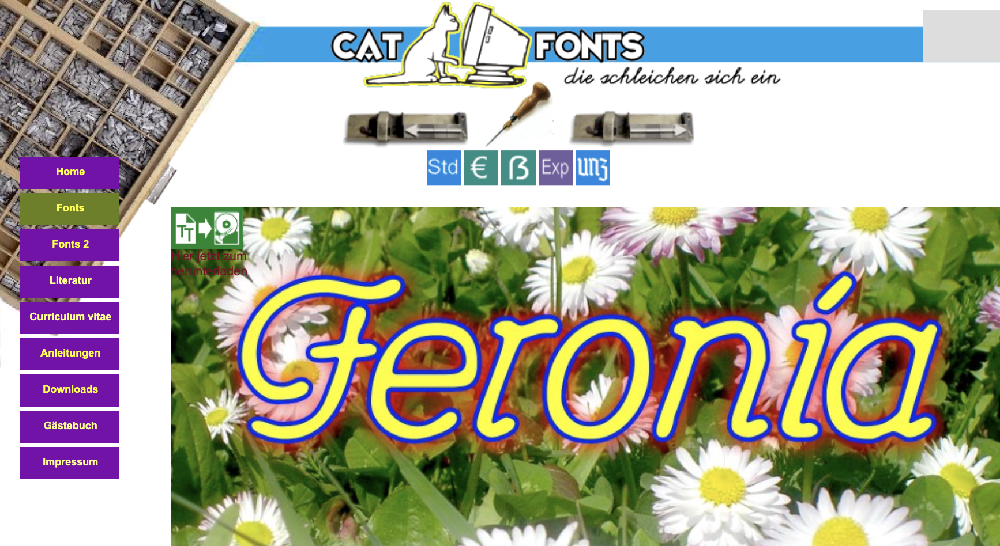
*fig.1*
C’était avec toute cette atmosphère-là, cet univers-là qui était intéressant pour moi. Et donc j’ai fait cette identité. Sauf qu’en faisant l’identité, je me suis rendue compte que la fonte était ultra bancale. C’était juste le crénage, juste le kerning qui partait un petit peu dans tous les sens.
Je sais pas si tu as eu la même chose aussi avec l’Admiral. Ce qui était normal en soit ce n’était pas l’objectif de la fonte d’être nickelle…
J’ai commencé à bidouiller par là dans un premier temps. Mais très vite j’ai eu besoin, par volonté personnelle de rajouter des glyphes inclusifs, sauf que du coup je me suis plongée là-dedans - comme t’as dû le faire - et en fait quand t’en fais un, tu veux en faire 10 et quand tu en fais 10, tu dois en faire 30 etc.
Ça s’est fait un petit peu comme ça : au début parce que j’avais besoin de lisibilité dans le travail, et après parce que je me suis dit que quitte à retravailler le kerning, autant mettre les glyphes inclusifs - et je les ai dessinés pour les affiches - et autant les rajouter dans la fonte…
C’est que du hasard tout ce projet-là, c’est un amoncellement de petits évènements.
Je t’explique : à Strasbourg, il y a un festival de graphisme qui s’appelle Format. C’est un festival assez récent. Et Velvetyne, qui est la plateforme, l’association sur laquelle je distribue cette fonte, avait un petit stand où iels vendaient leurs goodies etc. Je les ai hébergés pendant le festival. Il y avait Océane Juvin qui habite à Nancy et qui travaille à la galerie My Monkey. Il y avait Lucas Le Bihan, il y avait aussi Ilona Legrand qui était stagiaire à Velvetyne à ce moment-là et qui par la suite a fait un stage chez moi.
Vu que Océane, Lucas et tout ça - Lucas un peu moins parce qu’il est vraiment plus typographe que graphiste dans le travail qu’il présente etc. - sont graphistes et donc forcément entre graphistes, on a parlé de travail et on a parlé de ce travail-là que je faisais pour le palais des fêtes.
D’abord, iels étaient chez Velvetyne à un moment où iels se posaient la question de l’intégralité du travail de Peter Wiegel, car son site Internet était très vieux et parfois il crashait parce que l’URL était caduque etc. Iels avaient cette volonté de reprendre en charge déjà rien que financièrement l’alimentation du site de Peter Wiegel, donc iels payaient tous les mois pour que le site soit actif. Donc déjà iels étaient là-dedans.
Ensuite chez Velvetyne, iels étaient en pleine restructuration du genre : qui on est ? pourquoi on le fait ? quelles fontes on distribue ? pourquoi on les distribue ? et avaient décidé de faire un peu de tri c’est pour ça que certaines fontes ont disparu de leur catalogue. Aujourd’hui, iels sont un peu plus précises sur ce qu’iels veulent montrer ou pas, sur leur vision de la typographie libre.
Pour chaque nouveau projet, iels en parlent ensemble et si le projet est « accepté », s’il rentre dans les clous, tu as un ou une interlocutrice privilégiée mais il n’y a pas énormément de suivi technique : iels savent très bien qu'être typographe, c’est aussi un vrai taf et qu’iels ne peuvent pas se substituer au métier de typographe avec la même expertise.
En fait sur Velvetyne, il y a plein de gens·tes qui proposent des polices de caractère qui ne sont pas parfaites - c’est la première fois qu’iels font une police par exemple - et l’enjeu, ce n’est pas de proposer des polices nickelles où il n’y a pas de bug, etc. Mais de proposer d’autres visions possibles sur ce qu’est une police de caractère, quel outil c’est et à quoi ça peut servir.
Donc l’idée c’est de travailler et faire un projet parce que ça te touche et ça te fait plaisir et tu trouves ça important de refaire le projet de Peter Wiegel ou en tout cas le continuer, le compléter avec des considérations politiques essentielles et actuelles, et après de le redistribuer.
En fait c’est plus du partage de connaissances et une façon de mettre des outils à disposition plutôt qu’une fonderie où on va faire de la production pure dans le but de vendre.
Oui, c’est vraiment rendre accessible des fontes qui sont faites par des personnes qui viennent un peu de partout, c’est aussi un espace mis à disposition.
Et ça encourage aussi les projets un peu plus farfelus !
Parfois on n’est pas forcément dans la lisibilité immédiate, on va être dans quelque chose d’un peu plus conceptuel, on va être dans la recherche. Je crois que c’est Raphaël qui avait fait la fonte fourmis par exemple, c’est une fonte qui vient qui vient évoluer pendant que tu écris, elle change de forme etc.
Ah oui, c’est les Ouvrières. Oui c’est celle de Laure Azizi… elle était à la cambre, c’est pour ça !
C’est une plateforme qui vient encourager ce genre d’expérimentations aussi, tu vois. Et c’est un endroit où on peut le faire, où en tout cas on peut regrouper ces forces-là parce que tout le monde fasse des expérimentations. L’idée de Velvetyne, c’est aussi d’avoir de la visibilité en regroupant ces forces-là, expérimentales, sans se substituer à un travail de typographe. Enfin tu vois l’idée ce n’est pas de saper le travail du typographe qui essaye de vendre sa fonte c’est autre chose en fait c’est quelque chose de complémentaire.
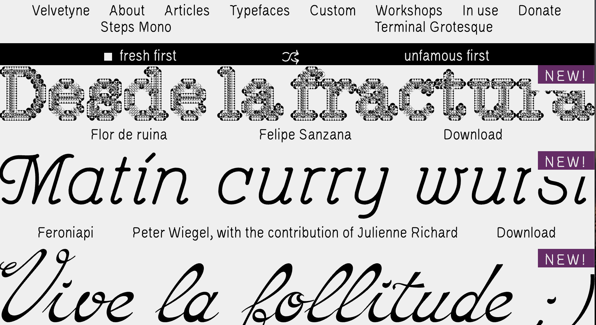
*fig.2*
Du coup je leur en ai parlé et ça tombait bien parce que eux iels étaient en train d’essayer de reprendre, de redonner un peu un souffle au site de Peter Wiegel et moi j’étais là-dessus, c’était du hasard et iels ont dit bon bah en fait ça marche bien, ce serait cool que tu puisses sortir ta fonte pour de vrai - la Feronia -
Et ça a mis vachement de temps parce qu’en fait moi j’ai un taf.
Je suis graphiste, je fais que de l’édition. Le monde de l’édition est super dur. Je gagne pas trop d’argent et tout ça. Donc les moments où j’ai pu m’y consacrer, c’était difficile et ça s’est étalé au final sur trois ans. C’était très long parce que ça faisait super longtemps qu’elle était dispo la fonte et j’aurais trop voulu pouvoir la donner plus tôt.
Et en plus de ça. iels voulaient que je rajoute quelque chose qui soit moins sérieux et plus dans la notion de - je sais pas - de s’amuser avec un glyphe sans que ce soit forcément une lettre. De chercher quel autre usage de la lettre, du glyphe on pouvait faire.
Au début, iels voulaient que je rajoute un set de fleuron qui marchait super bien parce que l’art nouveau etc.
Au final, j’ai essayé d’imaginer un jeu de frise avec des tirets et des fleurons qui viennent un peu comme un puzzle, d’essayer de jouer avec ça plus le dingbat. Enfin le set fruits et légumes, j’avoue ça c’était juste pour le plaisir.
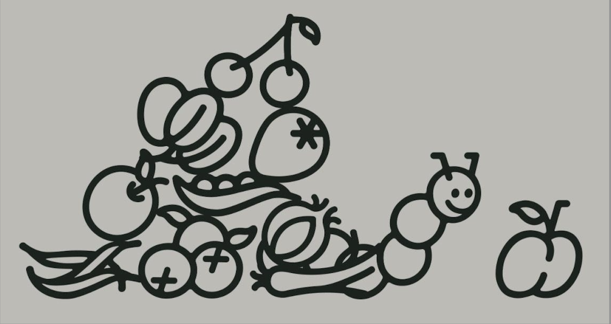
*fig.3*
Le gros point sur lequel iels avaient attiré mon attention - je sais pas si toi tu avais ça pour l’Admiral - c’est que j’ai du tout redessiner de A à Z.
J’ai l’impression que Peter Wiegel, il scannait des dessins en fait ou des photos et du coup forcément tu vois le tracé il n’est pas numérique. Ce qui peut être très très beau d’ailleurs… C’est pour ça que ma version de la Feronia ne se substitue pas à l’autre parce qu’en fait elles n’ont pas le même tracé. Mais pour apporter de la lisibilité, il fallait que je la redessine. Et Velvetyne m’avait demandé de lisser tout ça.
J’ai essayé de le contacter Peter Wiegel. Mais c’est un ami à lui qui m’a répondu parce que Peter Wiegel avait fait trois AVC l’année dernière et du coup il n’était plus du tout en capacité de répondre à ces mails-là. Apparemment - de ce que le gars me disait - Peter Wiegel est très content de savoir qu’il y a des gens comme nous qui viennent continuer son travail. On réouvre la porte de cette police et on essaie pas d’en faire quelque chose de neuf, un nouveau produit, c’est plus une évolution. Et il était giga chaud pour ça.
Le lancement officiel de la Feroniapi, c’est le 14 mars. Je l’ai invité mais son ami pense qu’il ne va pas pouvoir venir parce que pour l’instant il est à l’hôpital. Mais moi j’aimerais bien qu’il puisse aussi parler de son travail. Je sais pas si toi t’as réussi à parler avec lui, mais parler de comment il fait et notamment sur celle-là tu vois.
Je sais que Pierre Huyghebaert, mon prof, a essayé plusieurs fois de le contacter aussi, mais je crois qu’il n’a pas eu de réponse non plus et il avait pour projet d’aller le voir carrément. Genre au fin fond de l’Allemagne d’aller toquer à sa porte quoi !
Mais bon au final il n’y est pas allé. Mais c’est trop bien d’avoir des nouvelles parce que je savais qu’il n’allait pas très bien mais je savais pas à quel point.
Mais son pote il est pas typographe, il répète juste que lui dit Peter Wiegel. En tous cas je trouve que c’est trop cool qu’il ait envie ce travail-là continue. Et la licence de Peter Weigel, c’est une licence qui est pour le partage, mais qui oblige aussi à repartager si toi tu retravailles la fonte derrière.
Là où moi par exemple il faut que je la change parce que moi j’ai réutilisé la licence de Bye Bye Binary justement, la CUTE sauf qu’en fait j’ai pas le droit même si elles ont les mêmes enjeux et les mêmes envies c’est juste que c’est une une nouvelle licence qui est plus ancrée dans le contemporain.
Pour moi, le libre, c’était important, notamment dans la Qunification de la fonte, de pouvoir proposer ces formes-là parce qu’il y a aussi plein de genstes qui n’écrivent pas en écriture inclusive parce qu’iels n’ont pas forcément les outils adéquats. Ça peut donner envie aussi. Donc c’était plus pour ça et parce que je pense que c’est pas envisageable aujourd’hui de sortir une police de caractère sans ces glyphes-là. Après les gens·tes les utilisent ou pas, c’est pas mon problème en tout cas dans l’outil qu’on propose, ça devrait être obligatoire.
Et iels vous apprennent quoi d’ailleurs à la Cambre là-dessus ?
C’est très simple : Pierre et Eugénie Bidaut font parties de BBB, disons que c’est même pas un sujet, c’est-à-dire que personne de la Cambre depuis je sais pas 5 ans n’inclut pas ses glyphes inclusifs dans ses fontes.
C’est sûr qu’on a trop de la chance d’être entouré·es de ces profs là pour qui c’est une évidence parce que moi avant c’était vraiment pas le cas, j’étais à Estienne à Paris en typo aussi et ça n’avait rien à voir quoi, donc là c’est vrai que ça donne un peu d’espoir dans la suite.
Et l’apprendre comme une nouvelle norme presque au final. J’aime bien l’idée qu’on se pose plus trop de questions, on le fait et c’est que du positif pour tout le monde donc on se prend pas la tête.
Et en plus moi c’est ça qui m’a fait kiffer. J’aurais pas travaillé sur la fonte comme je l’ai fait si j’avais pas fait ces glyphes en particulier, parce qu’on n’est pas dans de la création primaire mais qu’on retravaille une forme qui existe déjà. C’est là où créativement après il y a eu les fleurons, les frises, les fruits et légumes tout ça. Mais d’abord je me suis engagée là-dedans parce que ça ça me faisait kiffer.
Oui mais il y a ce truc hyper intéressant, hyper stimulant dans ces glyphes inclusifs, c’est qu’il n’y a pas de règles. C’est vraiment là où il y a la place pour la création. Enfin moi j’ai exactement vécu la même chose avec la Admiral je voulais quand même rester fidèle au dessin, même si pareil, j’ai fait du relissage. À la base Peter il partait d’une fonte qui existait déjà, qui datait de 1900 en Allemagne. Et c’était une fonte à but publicitaire. Et je pense qu’il a vraiment, comme tu dis, scanné les dessins. Il les a genre potentiellement vectorisés, et puis ça s’est arrêté là et donc pareil le kerning enfin bref c’était un bordel monstrueux. Mais du coup c’était trop intéressant de se dire bon bah voilà il y a cette base. Qu’est-ce qu’on fait pour le remettre un peu au gout du jour avec des glyphs inclusifs ? et comment on reste quand même un peu fidèle à la volonté de base de Peter ? c’est trop intéressant ces questions et à l’heure actuelle, c’est indispensable de rajouter des glyphes inclusifs dans une fonte donc comment on associe un peu ces deux mondes pour que ça fasse sens ?
Parce que toi t’es partie de là du coup ? t’as choisi ? tu voulais augmenter une fonte et du coup t’as choisi celle-ci ? t’aurais pu prendre une autre ?
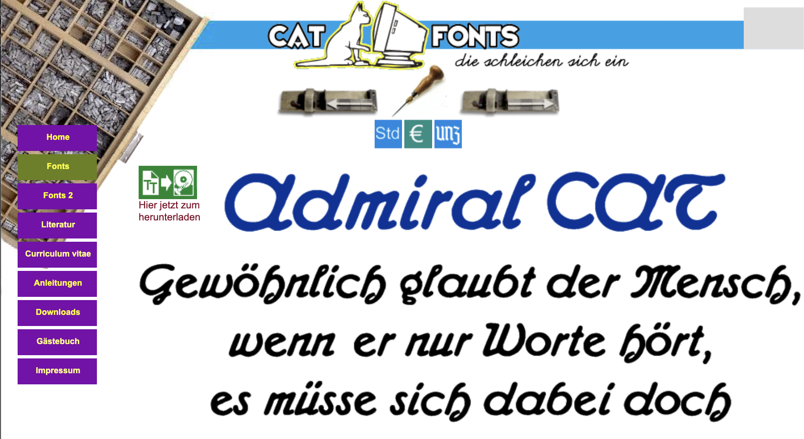
*fig.4*
Alors moi, ça fait plusieurs années que j’utilise la Admiral et qu’elle fait un peu partie de mon travail et donc j’avais cette idée depuis un moment de la redessiner parce qu'elle est très peu utilisable de manière pratique.
C’est juste que j’avais pas forcément le temps ni l’énergie mais cette année je l’ai et ça fait aussi sens dans mes recherches donc je trouvais que c’était le bon moment pour faire ça. J’étais aussi très attachée aux fontes de Peter Wiegel.
Oui il y en a des vraiment cool et c’est vrai qu’elles ont un mood un peu similaires sur ce côté un peu bonhomme, je sais pas comment expliquer, tu vois c’est très rond, c’est très lié.
Elles sont plutôt joyeuses quand même. Et t’as regardé pourquoi il l’a appelé Admiral du coup ?
La fonte de base qui date de 1900 en Allemagne s’appelait la Admiral et lui il a appelé la Admiral 4 du coup. Mais il a pas changé le nom de base. Et je pense qu’il y avait aussi un contexte allemand de guerre, en 1900 c’est quand même le plus haut grade militaire l’Admiral. C’est aussi ça qui m’intéressait, c’est qu’il y avait tout ce passif un peu… Enfin j’étais pas forcément en accord avec ça, donc je trouvais ça intéressant de m’y tenir, c’est pour ça aussi que je l’ai appelé la camarade, c’est un peu un clin d’œil. Enfin je voulais la débinariser et la démilitariser au passage.
Et t’avais retrouvé la fameuse pub et la fonte d’avant ?
Alors j’ai pas retrouvé les pubs parce qu’en fait il y a très peu d’écrits là-dessus, mais par contre j’ai trouvé plein d’infos sur la fonderie originelle et son dessinateur de caractères. Et donc j’ai un peu un historique là-dessus, mais j’ai pas l’utilisation exacte de la fonte.
J’ai juste des spécimens en fait mais disons qu’il n’y a pas de fontes in use de l’Admiral quoi !
Tu me demandes si je suis typographe ou graphiste ? ou comment je vois ça dans mon taf ?
Je pense que j’ai pas la légitimité de me dire que je suis typographe parce que je n’ai pas fait d’études de typo à part des études théoriques. Mais le fait est que, vu que je fais des bouquins depuis super longtemps, j’ai quand même un œil qui s’est aiguisé un petit peu et surtout une envie… Mon travail est très porté sur quelle police de caractère je choisis etc. c’est vraiment la base du taf.
Je pense que j’ai pas la légitimité de me dire que je suis typographe parce que je n’ai pas fait d’études de typo à part des études théoriques. Mais le fait est que, vu que je fais des bouquins depuis super longtemps, j’ai quand même un œil qui s’est aiguisé un petit peu et surtout une envie… Mon travail est très porté sur quelle police de caractère je choisis etc. c’est vraiment la base du taf.
Donc je ne pourrais pas dire que je suis typographe parce que clairement j’ai pas tout le bagage qu’il faut, mais par contre si je continue à en faire, je pourrais le dire. Je sais pas si je suis typographe, mais en tout cas j’ai fait un taf de typo et ça c’est quand même indéniable.
Après il y a quand même un truc où j’ai l’impression que si t’as pas fait d’études en typo, tu peux pas te dire typographe alors qu’en fait tu manies quand même la typographie au quotidien etc. Une sorte d’illégitimité par rapport à toutes les autres personnes qui manient ces formes-là, qui se disent typographe. Et en fait, il y a plein de façons de faire de la typo.
J’ai accompagné, il y a quatre ans Paul Dagorn, qui était dans mon atelier à Paris avant et qui a fait une police de caractère qui s’appelle la Foutique. Je sais pas si t’en as entendu parler.
On a fait toute une expo pour le lancement de cette police etc. un livre où il y a André Baldinger qui a écrit dedans et dans tout le livre, il raconte comment une police de caractère peut se dessiner avec une méthodologie qui n’est pas celle qu’on apprend à l’école, de se dire que la méthode, c’est : je vais créer une forme, je vais la tester sur un matériau, puis je vais regarder ce que ça donne, puis je vais changer la forme etc.
C’était un truc un peu empirique où il a testé sur de la moquette, sur de la céramique, en minuscule, en géant, sérigraphie et du coup c’est comme ça que, au fur et à mesure, il a créé sa typo.
Et je trouve que le fait de pas avoir ces études-là, notamment des études assez cadrées comme il peut y avoir Estienne ou autre, ça permet de s’extraire d’une méthodologie et de venir proposer des méthodologies différentes. Iels ne se considèrent pas comme typographe mais la résultante, c’est quand même une police de caractère !
Après là je pense que t’es dans les meilleures dispositions au final, pendant trois ans, t’as pris des bases de fou et c’est normal qu’au Master ça vienne tout bousculer, ça veut dire que t’as le meilleur des deux mondes.
Oui oui j’ai quand même ce "privilège" de m’autoriser à déconstruire tout ce que j’ai appris de base et de pouvoir m’en servir autrement. C’est vrai qu’il y a quand même plein de questionnements à faire autour de ce monde-là de la typo, de cet entre soi un peu, enfin il y a quand même beaucoup de choses encore problématiques je trouve.
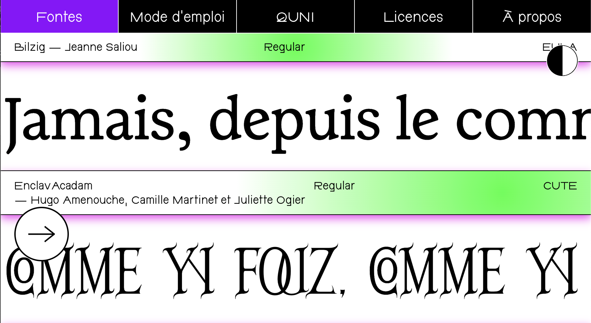
*fig.5*
Bah justement je pense que c’est là que Velvetyne intervient comme BBB - d’ailleurs il faudrait que je leur propose aussi la fonte - qu’il est important d’avoir ces espaces-là qui soient visibles pour imaginer des polices de caractère avec d’autres méthodologies que celles classiques et de les encourager.
Et c’est aussi une forme de militantisme, avec des outils qu’on sait utiliser. Avec des choses qu’on maîtrise, de dire voilà « je vais concentrer mon militantisme à travers les polices de caractère que j’utilise, que ce soit ce que je fais là avec oui certes une fonte de Peter Wiegel, mais aussi dans ce que j’utilise dans mon travail au quotidien ».
Il y a énormément de fontes qui viennent de BBB, il y a énormément de fontes que j’achète à des personnes qui sont pas des grandes fonderies, mais plutôt des typographes indépendants indépendantes et tout ça et du coup c’est une façon de militer par la typo.
C’est important aussi de donner des sous au bout d’un moment au·àla typographe et dans ces cas-là, j’essaye toujours que ce soit les boîtes avec lesquelles je travaille qui achètent les polices de caractère en fait.
Moi je travaille qu’avec des maisons d’édition de sciences sociales ou de littérature ou la CGT. Et du coup c’est aussi une part de militantisme. En tout cas, c’est important pour moi que je leur fasse débourser des sous à ces structures-là, qui ont des polices de caractère inclusives ou qui présentent une nouvelle forme de création etc etc.
J’imagine que c’est aussi une forme d’éducation pour ces structures-là qui sont pas forcément au courant de ce qui se passe dans le monde de la typo. et du coup tu viens aussi un peu leur apporter ce côté-là.
Ça arrive, mais parfois je le fais en soum-soum parce que en fait je donne aussi des cours de typo à des licences et c’est le C’est B.A BA de la typographie parce qu’iels ne savent même pas ce que c’est.
Tu enseignes où ?
À l’université de Strasbourg.
En première année, le premier cours, ça va être vraiment : Ok, ça veut dire quoi déjà la typographie ? Et je parle aussi directement d’écriture inclusive, parce que moi les cours typo que j’ai eus, c’était vraiment genre la classification box et machin, il n’y avait que ça donc j’essaie un peu de leur faire voir tout ça.
Par contre, avec mes client·es, je peux pas prendre tout le temps ce temps-là, de leur expliquer c’est quoi une police de caractère, pourquoi celle-ci elle est différente de celle-ci etc. Donc il y a plein de fois où je vais utiliser des polices que je trouve importantes d’utiliser, mais j’avoue l’éducation derrière, je la fais pas forcément.
Pour le travail de collectif - moi je suis indépendante, je ne travaille pas en collectif systématiquement - je dirais que la moitié de mes projets sont avec d’autres personnes. Je suis dans un atelier, j’ai toujours travaillé en atelier avec d’autres personnes autour car je suis bien incapable de travailler toute seule chez moi.
J’ai besoin de confronter mes idées à d’autres personnes, rien que pour la fonte la Ferronia : je leur montre pour savoir si c’est lisible, si la forme me plaît etc. Je suis toujours en interaction avec des gens. Sur le taf d’édition, je vais faire plutôt seule mais il y a des tafs comme un magazine de la CGT où je suis toujours avec une autre personne ou pour les gros projets, genre les expos toujours à plusieurs etc. Rien que travailler dans un lieu collectif te force ça favorise l'échange.
En plus je suis dans un atelier avec un gars qui était dans l’atelier Téméraire, je sais pas si tu vois ce que c’est. Donc forcément les questions du « libre » et les questions du « collectif » sont très présentes dans nos conversations.
A l’université, on est deux profs sur les questions de quel logiciel on propose aux étudiants aux étudiantes. Ça c’est des discussions qui reviennent souvent et c’est pas si facile parce que en fait je comprends que tes profs t’aient proposé glyphes et qu’iels t’aient montré glyphe parce que c’est tout ce qu’iels maîtrisent et qu’en fait là on est pas forcément sure d’apprendre, de connaitre un autre logiciel, comment ça fonctionne, comment une lettre elle fonctionne etc.
Je comprends les deux côtés, c’est aussi difficile d’être prof et de savoir maîtriser tous les outils de création libre pour pouvoir bien les expliquer et bien aider d’autres personnes à évoluer à l’intérieur de ces logiciels.
En tout cas ce sont des discussions dans mon travail.
Est-ce que toi au quotidien il y a une place pour les logiciels libres ou bien il y a cet équilibre un peu qui se crée où tu bascules entre les deux, parce que c’est pas si évident d'être complétement autonome, en tout cas de se dissocier ?
J’ai appris sur la suite Adobe mais j’essaye enfin j’ai tous les logiciels, je pense que c’est grâce à mes étudiantes puisque honnêtement, c’est terrible mais c’est une question de précarité : les logiciels Adobe et tout ça, ça coûte une blindax. C’est hors de question que je dise à mes étudiantes de dépenser 60 balles par mois pour avoir ces logiciels-là. J’ai pas envie de ça en tout cas.
Donc, soit je leur propose de se débrouiller pour les avoir sans payer, enfin je leur propose pas et iels se débrouillent. Soit je leur propose des alternatives genre Inscape. Mais si je leur propose, il faut que je sache l’utiliser. Ça va être dans ces moments-là où moi j’utilise ces logiciels là, c’est plus dans la transmission de la pédagogie, parce que honnêtement quand je taffe, j’ai tellement mes habitudes et je suis super efficace en fait sur Indesign.
Il faudrait du temps d’expérimentation, d’expérience, de maîtrise pour que je puisse changer. Donc ça j’espère un jour, en tout cas je m’y essaye, mais pour l’instant c’est sûr et certain que je suis pas aussi efficace.
Pareil pour les réseaux sociaux, je suis en train de migrer aussi pour plus être sur Instagram, c’est quand même un sujet aussi.
Mais faut savoir que la réalité professionnelle, elle est hardos.
Et enfin vous à Bruxelles, vous avez la continuité des revenus mais en France elle n’est pas passée tu sais, je sais pas si tu as vu, il y a eu un projet de loi et ça c’est que des claques que tu te prends dans la gueule tous les jours, l’urgence c’est plus de trouver du taf que…
Enfin les deux sont des urgences, mais c’est juste que moi personnellement, en ce moment, je mets plus d’énergie à pérenniser mon travail plutôt qu’à mieux maîtriser d’autres logiciels. Mais ça reste quand même une question et surtout j’ai pas envie d’apprendre à mes étudiants et à mes étudiantes, la même chose que ce que moi j’ai appris. En tout cas de leur proposer d’autres logiciels possibles, d’autres façons de créer possibles et d’autres automatismes possibles parce que quand tu vas sur un logiciel, tu as des automatismes et du coup si tu changes de logiciel, ça change donc ça c’est important.
Pas forcément que le libre mais proposer aussi des petits logiciels, d’utiliser des petits logiciels qui sont plus indépendants, comme TexTuring d’Ivan Murit ou Spectrolight c’est des petits logiciels qui coûtent 10/20 balles.
Donc oui ça coûte mais par contre tu vois c’est c’est des gens des professionnel·les qui les ont fait, enfin des professionnel·les de l’image qui qui ont développé des outils et du coup tu viens rétribuer ce travail-là, tu sais très bien qu’il va aussi fonctionner pour toi parce que c’est quelqu’un qui te ressemble qui l’a fait donc il y a un peu une sorte de mélange comme ça qui se crée quoi.
Oui oui c’est sûr que si c’est juste pas des logiciels privé et cher comme Adobe et que c’est des logiciels de personnes indépendant·es qui ont travaillé dessus ça vient équilibrer aussi cette histoire de logiciel libre en fait c’est tous ces questionnements qui ont en tout cas les mêmes valeurs quoi.
Et je me demandais juste enfin si tu décidais de refaire une typo si t’as le temps et peut-être que genre si jamais c’était une commande parce que j’imagine qu’avec la Feroniapi ça va je pense qu’il y a un peu du bruit qui va se faire.
Velvetyne, c’est quand même une fonderie assez connue et je me dis que ça pourrait se faire en tout cas. Sous quelle licence tu voudrais la partager, est-ce que tu la rendrais accessible comme t’as décidé de rendre accessible la Feroniapi ? Est-ce que c’est un peu au centre de tes questionnements ou alors tu viserais plutôt des fonderies où tu pourrais te faire un peu de sous avec.
Bah honnêtement je pense que c’était beaucoup de taf. J’ai trop kiffé le faire. Et je pense que je vais le refaire.
Tout dépend du projet, si c’est un projet similaire par exemple, c’est une fonte que j’ai développée dans le cadre d’un appel à projet et du coup le plus gros du travail est déjà fait, il me reste plus qu’à la développer à en faire un vrai outil, je pense que je pourrais la redistribuer sous licence CUTE.
Par contre, je t’avoue que encore une fois moi je suis dans des considérations économiques qui sont assez précaires et difficiles et j’ai envie que ça reste mon métier encore longtemps.
J’ai quand même un peu le seum de me dire ça fait 10 ans que je fais ce métier et je suis encore dans la précarité, ça fait chier. C’est quand même pas facile à vivre tout le temps et si je suis aussi encore dans cette précarité, c’est parce que je fais le choix aussi de travailler sur des projets qui sont importants pour moi, genre je vais jamais de la vie travailler dans la pub ou faire un travail avec lequel je suis pas en accord avec les valeurs.
Bref. En tout cas, c’est important pour moi de travailler pour des choses que je trouve importantes. Effectivement si je devais refaire une fonte, encore une fois avec ma non-légitimité qui est quand même là par rapport au fait que j’ai pas fait mon BTS à Estienne machin et tout, je pense que je la distribuerai pas dans une fonderie où elle serait vendue 200 balles la variante.
Par contre, à l’image d’Ivan Murit ou autre, je pense que je la vendrai en indépendante sur un site perso, genre à 30 balles. Comment il s’appelle le site où ça répertorie des gens·tes qui sont en train de bosser sur des fontes, t’as accès au V1, V2, V3, etc. Tu peux acheter la version qui t’intéresse par exemple la V1 ser à dix euros la V2 à 30 € etc.
Ça permet à la personne qui crée de continuer à travailler dessus jusqu’à ce qu’elle soit terminée.
Est-ce que c’est Future Fonts ?
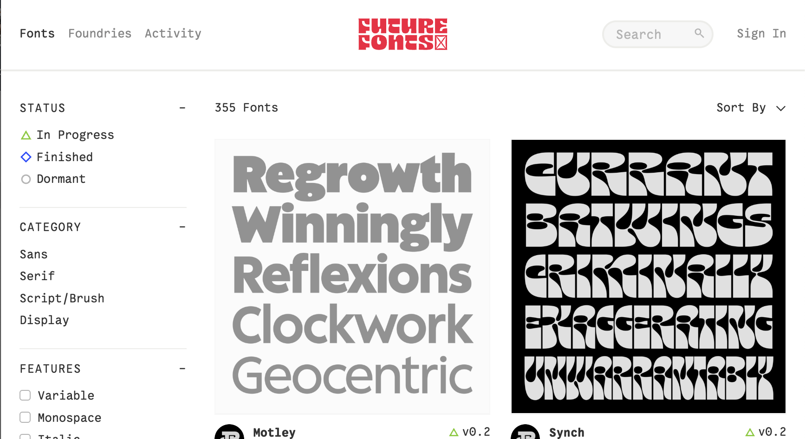
*fig.6*
Oui c’est ça !
Et bah tu vois là, je trouve qu’il y a un truc un peu plus juste alors je ne me suis pas du tout concentrée sur comment ça fonctionne et voilà comment ça marche derrière au niveau associatif qui paye le site etc.
Mais c’est vrai qu’il y a quand même un entre-deux qui existe, enfin par exemple je sais que c’est comme ça que fonctionne Bye Bye Binary où iels ont des commandes de structures un peu conséquentes en tout cas à Bruxelles, enfin des théâtres et tout ça.
Iels leur demandent de forker leur fonte pour qu’elles deviennent post-binaire. Mais la condition c’est qu’ensuite elle devienne une fonte libre, que les gens·tes puissent la télécharger et c’est comme ça qu’on les retrouve toutes sur le site de BBB. Il y a quand même une volonté d’acheter leur travail et leur expertise.
Mais il y a ce truc derrière où il faut qu’elle soit accessible à tous·tes après quoi.
Ouais non mais oui ça c’est un bon moyen, mais du coup ça veut dire faire tout un travail de démarche et de pédagogie envers tes client·es et surtout ça part d’une volonté de la structure culturelle ou autre, donc c’est-à-dire que c’est quand même des gens·tes qui sont déjà ouvert·es à ce type de proposition, c’était trop cool. Ça vient payer de manière très simple la créa et le développement, la finalisation d’un projet et après si elle peut être utilisée par plein de gens·tes, c’est parfait.
Mais bon c’est sûr que ça reste ultra précaire aussi et puis j’ai l’impression qu’en Belgique c’est peut-être un tout petit peu plus en avance sur ces questions-là. En France on est très loin d’avoir des commandes de grandes structures culturelles pour une fonte post-binaire.
Toi tu vas rester en Belgique après ?
J’aimerais beaucoup, mais bon en fait je vois tous·tes les dernier·es diplômé·es de ces trois dernières années, c’est la méga galère de trouver du travail. Surtout quand on sort du Master à la Cambre, on n’a pas du tout envie d’aller dans des grosses structures, enfin comme tu dis au secours. Et donc voilà on se met en indépendant·e, mais c’est ultra précaire au début forcément.
Je me demandais si toi, t’avais direct la volonté d’enseigner après tes études ou c’est venu après.
Bah en fait moi j’ai commencé à travailler pendant mes études.
D’ailleurs Ilona m’a appelé il y a pas longtemps pour parler de ça. En gros je sais que quand tu finis ton Master, il y a une sorte de gap un peu flou, un peu chelou de qu’est-ce qui se passe dans ma vie ça fait 20 ans 25 ans que je suis à l’école et on m’a toujours guidée. Je suis censée être sur le monde du marché du travail et c’est la galère et tout ça. Il y a toujours des moments qui peuvent même se transformer en dépression, enfin des trucs hardos où les gens·tes sont pas forcément accompagné·es et tout ça. Et ça peut durer enfin surtout quand t’es graphiste, je vais te déprimer, mais quand t’es graphiste si tu veux travailler sur des projets que auxquels tu tiens et bah en fait ça demande encore plus de temps, ça peut prendre 3, 4, 5 ans.
J’ai eu la chance de pas avoir ce gap là parce que j’ai commencé à travailler pendant que j’étais en études donc j’ai fait mon statut et j’ai des client·es que j’ai encore aujourd’hui. Tout s’est fait un peu de manière smooth grâce au bouche à oreille.
Au final j’ai jamais eu de client·es grâce à Instagram ou autre. Le plus important c’est de faire des trucs que tu aimes et persévérer dans le temps, genre vraiment persévérer dans le temps.
Je pense que les projets collectifs sont intéressants, même si on gagne rien, même si ça fatigue ou des fois peut-être ça peut mal se passer et c’est normal, ça arrive. C’est important pour rester dans l’action pour rester dans une une énergie commune, collective et de pas de pas se renfermer dans l’inactivité parce qu’on trouve pas de travail, je pense que c’est hyper important d’être en lien d’imaginer des mini expos, etc…
En tout cas de rester dans l’action et trouver aussi un lieu si les sous le permettent, un lieu de travail. Là, vous avez l’air d’être un bon groupe à La Cambre, je pense que c’est possible de trouver un atelier ensemble après l’école.
Et puis que vous ayez votre Master ou pas c’est même pas le projet, c’est plus être ensemble quoi.
C’est ça le plus important et surtout de pas pas perdre la foi. La réalité des choses te rattrape vite et moi j’avais pas envie d’avoir un travail qui me convenait pas, c’est pour ça que j’ai commencé à faire des cours pour augmenter un petit peu mes fins de mois.
Maintenant ça me prend quand même un jour et demi par semaine, donc c’est assez conséquent et j’ai beaucoup de préparation en amont. Au final je suis très contente d’être tombée là-dedans parce que j’aime trop déjà être avec les étudiant·es. J’aime le fait que ce soit une université parce que moi j’ai toujours été dans des écoles d’art et j’ai jamais entendu parler d’université comme un lieu possible où on pouvait faire de la création et notamment de la création graphique.
Donc ça me plaît aussi d’encourager ces espaces-là parce que vu que c’est une université et que c’est pas aussi cadré qu’une école, j’ai beaucoup plus de libertés dans ce que j’apporte aux étudiant·es. Bref, il y a plein de bons côtés et avant c’était pour arrondir mes fins de mois, maintenant j’aime vraiment ça.
Surtout ça me permet d’avoir des projets comme la Feroniapi ou des expositions que je peux monter. En fait ça me permet aussi d’avoir un temps disponible pour faire 100 % du bénévolat ou du travail qui n’est pas payé. Et dans la réalité des choses, tout le monde a un double travail.
Tous les gens·tes autour de moi, iels ont un autre taf. Dans mon atelier, on est trois à être prof et une qui bosse pour de la pharmaceutique tous les mois, il y en a un autre qui travaille dans un burger qui est illustrateur.
Donc en fait c’est la norme aussi, je pense qu’il faut pas voir ça comme une défaite ou comme un recul si d’un coup dans six mois tu te retrouves à travailler à la Biocoop. Et c’est ça qui permet de continuer à côté les projets importants qui nous tiennent à cœur.
Je redis ça parce que j’en ai parlé à d’anciennes étudiantes, il y a pas longtemps, il y avait quand même ce brouillard d’après études qui peut être ultra stressant.
C’est vrai que ici aussi à Bruxelles, les gens·tes ont quasi toustes des tafs à côté. Ça fait partie du job et si ça fonctionne comme ça et que ça nous va, enfin moi je sais que je suis très en paix avec ça si ça me permet de rester ici et de trouver un peu des tafs indépendants, tout en faisant partie d’un collectif c’est chouette.
Oui à fond ! Tu me diras où t’en es de la fonte, ce que tu vas faire avec et tout ça.
Je pense qu’après avoir parlé avec toi et tout je me dis que ça serait intéressant d’appeler Velvetyne aussi, de les rencontrer et de leur poser des questions sur comment iels fonctionnent au sein de la fonderie, quelles questions iels se posent et tout.
Bah carrément, c’est-ce que j’allais dire, d’ailleurs je sais pas toi comment tu veux diffuser ta fonte, j’imagine qu’elle va peut-être être diffusée sur BBB, mais ce serait cool de la diffuser aussi sur Velvetyne, non pas que je veuille faire de la pub…
Je m’étais posée la question et c’est aussi pour ça que je voulais te rencontrer. C’est qu’il y a quand même ce sujet de nos fontes qui se ressemblent un peu, ou en tout cas qui partent d’un même principe donc direct je me suis dit je vais peut-être pas pouvoir la diffuser sur Velvetyne. C’est aussi pour ça que je réfléchissais à comment iels gèrent les entrées de fontes et quelles décisions sont prises au sein de Velvetyne. Si vraiment il y a une règle qu’il faut que toutes les fontes publiées soient ultra différentes ou pas.
C’est vrai qu’iels ont une politique où iels veulent proposer des choses très très différentes, mais par contre iels sont quand même très attachées au travail de Peter Wiegel, donc je pense que ce serait cool.
Mais peut-être qu’il y a moyen de la distribuer là-dessus et si jamais le 14 mars il y a le lancement réel de la Feroniapi à Strasbourg au Centre Européen d’Action Artistique Contemporaine. Il y aura Lucas Le Bihan et Ilona, sûrement Océane aussi. Si jamais tu veux venir à ce moment-là, ça peut être cool et ça peut-être même l’occasion de présenter aussi ta fonte je sais que c’est pas ton public, les Strasbourgeois·es, mais au public strasbourgeois. T’es la bienvenue si t’as envie de t’intégrer à ce petit moment.
Mais trop bien, en tout cas je note la date et j’aimerais trop voir ça en tout cas.
Ressources avec
Juliette Ogier
le 6 avril 2026
Est-ce que tu veux bien te présenter comment toi t’as l’habitude de le faire quand tu parles de ton travail ?
Justement, c'est un peu un petit peu mes questions du moment, comment je me définis, mais donc je suis designer graphique, typographique et maintenant peintre en lettres.
Donc j'ai fait des études de graphisme, après je me suis spécialisée en typographie.
Je me suis beaucoup intéressée à la question de faire à plusieurs, pas forcément en même temps mais aussi de faire avant ou après des personnes, c'est-à-dire s'approprier des projets ou comment préparer la réappropriation de projets.Le travail collectif en général, c'est quelque chose qui me porte dans mon travail et dans ce que je fais de façon générale.
Ces derniers temps, je me suis mise à la peinture en lettres, dans le cadre du Prix Savoir-faire en transmission. Et je fais beaucoup de réinterprétation de lettres, puisqu’avec la peinture tout est mouvant en permanence.
À la fois il y a encore toujours mon projet à l’ANRT, qui est là puisqu'il y a une exposition à Nancy actuellement et il va y en avoir une à Strasbourg bientôt. C’est donc un peu complexe de me présenter, dans 6 mois je le ferai sûrement différemment.
J’aimerais bien qu’on revienne à tes recherches pendant ton DNSEP autour des licences et tu travail à plusieurs en typographie.
J’ai commencé par m’intéresser à Fontyou c'était une fonderie qui s’appelle maintenant Black Founderie. Le but c'était de faire appel à des personnes qui ne pouvaient pas développer des projets typographiques complexes par manque de temps ou de compétences en les accompagnant à développer leur caractère et puis les vendre. Je trouvais ça super intéressant comme manière de travailler ensemble.
Je m'intéressais beaucoup aussi aux licences et j’en ai trouvé plein qui étaient hyper intéressantes, notamment la Do What The Fuck You Want licence. une licence c'est ce qu'on laisse faire aux gens.
Par exemple les fontes qui ont été faites avec le CNAP, Alice Savoie et Sandrine Nugue, elles sont gratuites, on peut les utiliser mais on ne peut pas les modifier. C'est des objets graphiques où on peut pas bouger les points du dessin de caractère.
Sauf qu' c'est souvent un petit peu flou ce qu'on a le droit de faire pas et c'est justement ce que j'ai voulu questionner dans ce mémoire.
À quel moment on rentre dans le dessin de caractère et on n’est pas juste en train de faire une composition typographique ? Est-ce que si je mets un contour sur la lettre ou je change l'interlettrage, c'est pas déjà déformer ?
Dans la peinture en lettre je me pose les mêmes questions, on reproduit la lettre et il y a des choses qu'on vient aussi de façon changer, on va faire les arrondis un peu moins piquants parce qu’on a mis trop de diluant dans la peinture etc.
Mon projet de diplôme de DNSEP, il s'appelait Fontes Tiroir, l’idée, c'était de faire un site participatif qui soit un petit peu plus respectueux quand on reprend le caractère de quelqu'un, quand on l'utilise aussi. Venir revaloriser le fait de faire à plusieurs et puis de favoriser aussi des échanges.
Je me suis rendue compte que plein de gens avaient dessiné des caractères que je trouvais super, mais qu'ils avaient jamais avancé ou terminé.
Le but du site, c'était de mettre à la même échelle beaucoup de choses, notamment la partie recherche, la partie dessin (croquis) qu’on voit très rarement sur des sites.
Je voulais d’abord qu’on puisse comprendre le travail qu'il y avait derrière avant de pouvoir télécharger la fonte et d’en voir toutes les versions. Ça fonctionne un peu comme des tiroirs où on n'a pas juste accès au fichier final.
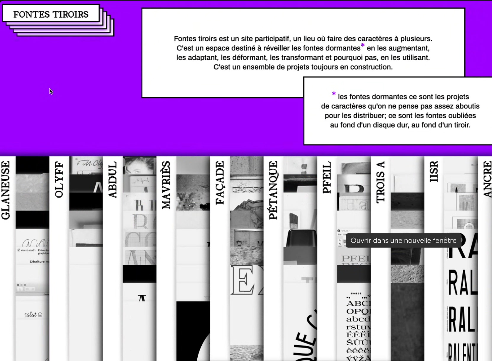
*fig.7*
L'intérêt du collectif, je pense pour beaucoup de personnes, c'est un moteur de travail dans le sens où quand il y a du monde autour de moi, j'arrive beaucoup mieux à avancer. On a un peu aussi des comptes à rendre à quelqu'un et donc on est aussi plus efficace ou en tout cas plus rapide. Ça permet des créations d’idées auxquelles j'aurais jamais pensé toute seule et ça élève aussi les projets en général.
Comment vous vous êtes organisé·es du coup pour l'Enclava en collectif ? Comment il est né ?
C'est un très bon exemple de projet où pour le coup, on avait déjà des affinités de travail avec Camille et Hugo. C'était dans le cadre d'un cours avec Corentin Noyer qui nous a emmené au fonds ancien de l'école de l'ISDAT avec Anne Jourdain la conservatrice.
On devait fouiller dans les vieux livres et voir ce qui nous intéressait. L’idée étant de faire un revival en groupe.
On avait plusieurs exemples de lettres de monastère, c'était majoritairement des lettres de titrage.
On les trouvait intéressantes parce que les lettres étaient enclavées, imbriquées les unes dans les autres et on trouvait que ça faisait des sortes de ligatures.
On l’a appelé l'Enclava parce que c'était enclavé et aussi parce que c'était beaucoup des lettres du monastère de la Cava. On avait aussi l'avantage d'avoir fait les workshops de Bye Bye Binary, c'est Hugo qui s’est occupé·e de l’encodage.
Je trouve que c'est le genre de projets où typiquement c'est pas simple de mettre en avant l’autorialité, c'est un mot que j'ai appris quand je faisais mon mémoire : qui fait quoi, à quel niveau, le temps que ça prend, les compétences ou les moyens que ça demande à chaque personne.
Par exemple, moi aujourd'hui, j'ai encore jamais encodé de glyphes inclusifs mais je sais faire plein de trucs en dessin de caractère, vu qu’on bossait avec Hugo qui savait, on lui a laissé faire ce taf là. Tout ça se fait un peu naturellement en fonction des compétences de chacun·e.
J'ai souvent été la personne qui faisait l’unification en rassemblant les fichiers de tout le monde.
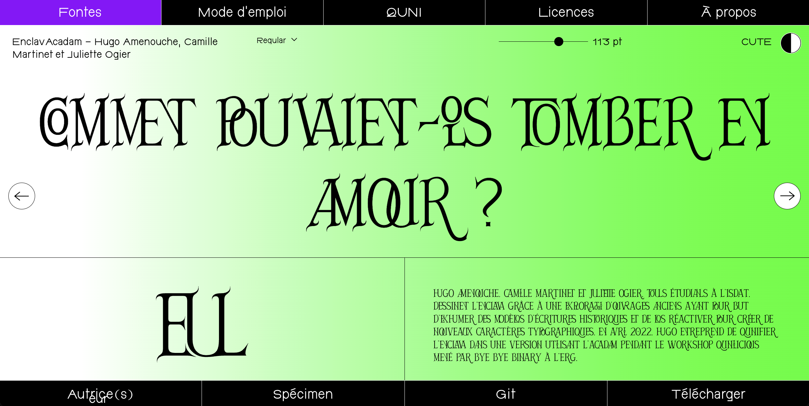
*fig.8*
Tout ça c'est parce qu'on travaille sur Git qui fonctionne comme ça.
Je trouve que c'est pas complètement optimisé pour le collectif, ça manque de simultanéité comme avec Fontra ou google doc. Avec Git y’a quand même cette étape en plus de devoir mettre à jour. On se perd vite dans les versions, on sait plus si c'est celle avec les glyphes inclusifs ou celle que j’ai corrigé en dernier bref, on a dû écrasé quelques versions comme ça.
Je trouve que c'est des choses qui mériteraient d'être améliorées pour faciliter le travail en collectif et les échanges.
Pour moi en tout cas, à l'heure actuelle, le mieux pour faire des projets en groupe, c'est de se donner un temps où t'es ensemble au même endroit.
C'est vrai qu'il y a quand même un truc quand t'es dans la vraie vie ensemble à plusieurs, il y a une énergie que t'as pas quand t'es à distance en visio. Enfin c'est pas du tout la même ambiance, on est bien plus stimulé·es en tout cas.
Si là tu refaisais un projet typo, dans ton temps plutôt pro contrairement à l’Enclava qui était dans un contexte d’étude et où le choix de la licence était plus « simple », tu ferais un autre choix de licence ou pas forcément ?
C'est une très bonne question qui me torture un peu en ce moment. Je pense que j'aimerais bien un jour avoir quand même un endroit où publier mes projets, et donc comme beaucoup de dessinateur·ices de caractère, avoir ma propre licence.
Je sais pas si t'as vu, c'est Anton Moglia qui a fait une licence amicale. Le but c'est quand t'as pas fini un caractère ou que c'est un caractère que tu distribues pas pour l’instant, ou que tu veux le prêter à quelqu’un, t’utilises la licence amicale. La personne l’utilise pour son projet mais iel partage pas les fichiers fontes.
Et donc est-ce que c'est un peu ce que t'as en tête quand tu dis que t'as envie d'écrire ta propre licence ? C'est de créer un peu tes propres règles un peu comme Anton ?
Je pense que c'est quand même aussi important à un moment et sur certains projets d'être rémunéré·es. Si on est rémunéré·es sur le temps de travail qu'on y a passé, donc dans le cadre d'une recherche d'un projet scolaire même juste d'une résidence par exemple, je trouve que c'est aussi honnête d'accepter de le donner gratuitement, s'il est donné gratuitement, est-ce qu'on veut qu'il soit aussi redistribué par n'importe qui, en tout cas se poser la question.
Il pourrait y avoir d’avantage de projets de fonderies collectives aussi, comme Collletttivo.
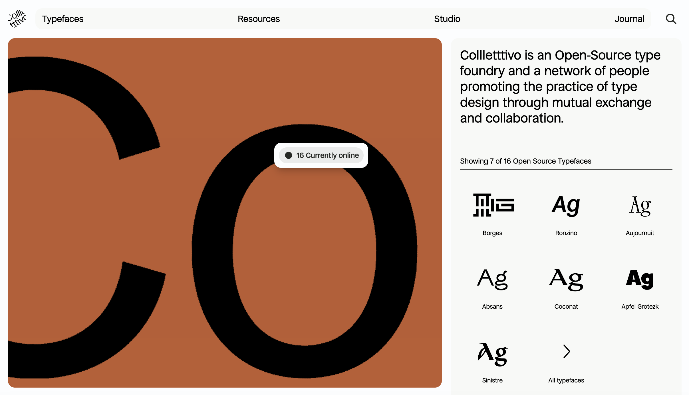
*fig.9*
Est-ce que tu aurais des conseils de graphistes typographes à qui je peux poser un peu des questions comme ça ou en tout cas qui traitent ce genre de sujets ? Peut-être qui toi t’ont aidé ou inspire dans tes recherches ?
Tes recherches elles me font penser au projet collectif Prepostprint. La question du webtoprint open source elle est tellement intéressante parce que c'est vraiment le meilleure moyen de partager au plus grand nombre et facilement sur internet et, en parallèle, il y’a quand même possibilité d’avoir un élément imprimé qui apporte autre chose.
Le logo c'est un ordinateur, une imprimante et un livre qui se tiennent les mains.
C’est une mise en page qui découle du site web et ça marche hyper bien.
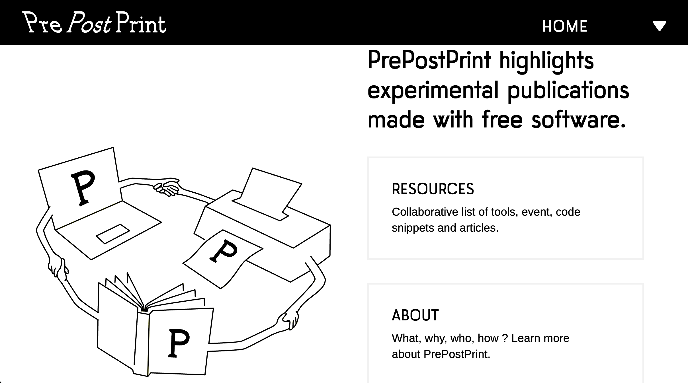
*fig.10*
C’est un peu l’idée de ces entretiens que je mène ici, c'est qu’il y ait une version web et une autre print. On a fait un workshop avec Julie Blanc où on a appris à utiliser Paged.js. Ça rejoint clairement ce qu’iels font à Prepostprint.
Je trouve que ça permet de concevoir autrement le graphisme aussi, les mises en page peuvent être hyper simples parce que c'est du web et donc il y a moins de prises de tête, on va direct à l’essentielle et le print découle facilement.
J'aime bien la WTFPL, leur DA est marrante si tu visites le site, tu peux lire le texte de la licence aussi.
« The League of Moveable type » ça peut être une autre ref aussi c'est la première fonderie open source qui a été faite en 2009. Mais c'est un peu bizarre je trouve, enfin tu liras leur manifeste, mais les logos qu’on peut voir direct en arrivant sur le site ça fait très capitaliste.
Après il y a le travail de Charles Mazet aussi sur l'écriture normalisée, même si c'est un peu à côté, enfin c'est plus le côté visuel de monolinéaire, mais ça rejoint forcément les strokes fontes.
Alors c'est un peu pas trop à voir, mais moi le projet que j'ai découvert parce que je faisais la médiation d'une expo des 20 ans de l’ANRT.
Le travail de Camille Trimardeau sur la notation en gymnastique qu’elle a mené à l’ANRT est très interessant aussi. On peut dire qu’elle a fait une sorte de single line aussi d’après des symboles utilisés pour noter les acrobaties. Sur le fond c'est pas totalement en lien avec ton projet mais quand tu regardes les formes c'est hyper inspirant je trouve.
Ressources avec
Benjamin Dumond
le 23 avril 2026
Je suis en dernière année de Master typographie à la Cambre et mon projet de diplôme et de recherche qui va sûrement continuer après, c'est comment faire autrement en typographie. Notamment parce que le début de mon parcours, c'était à Estienne.
À La Cambre j’apprends plutôt à déconstruire ce que j'ai appris à Estienne ou en tout cas m’en servir autrement. Je m’intéresse aussi à comment travailler en collectif et faire du dessin de caractère avec d'autres outils que ceux que j’ai appris à la base.
Pour ça je rencontre des gens·tes qui bossent autour de ces questions et l'idée à la fin c'est de regrouper toutes ces recherches dans un site web pour rendre accessible ces ressources.
Et du coup t'as fait quoi comme type de projet là autour de ça à la Cambre ?
Alors j'ai fait pas mal de Metapost parce qu’on a eu un workshop avec Antoine Gelgon l'année dernière mais aussi du Paged.js avec Julie Blanc.
Et en fait tout part de ces deux workshops c'est à partir de là que je suis rentrée dans le monde des outils alternatifs. Depuis un an je bosse avec une ancienne diplômée de la cambre, Enora, et on fait une typo ensemble sur metapost et on documente toute notre recherche. On écrit des textes sur notre pratique et sur comment on en est arrivées là.
J'ai aussi participé au workshop d'OSP où on a bossé avec Skelefont.
Ah oui pardon j’ai pas réagis, c'est vrai que j'en ai jamais trop discuté avec d'autres gens de l'outil, donc j'ai jamais entendu les gens prononcer le mot…
Du coup je trouvais que ça faisait sens de te contacter et de discuter de tous ces sujets !
Trop cool ! Donc moi je viens des Beaux-Arts de Valence. C'est la dernière formation que j'ai faite où j'étais d'ailleurs avec Antoine, il était une année au-dessus. Il y a eu toute une team de gens qui sont partis à Bruxelles et on s'est vachement entraîné les uns les autres dans le logiciel libre.
Quand je suis sorti de Valence, on a directement bossé ensemble avec trois autres personnes. Armand, Lucas et Raoul, et on a monté un collectif qui s'appelle Bonjour Monde. On voulait avoir une structure pour faire des workshops à côté de notre travail de commandes, un lieu où on pouvait faire plus de bidouillage d'outils, que ce soit des outils physiques ou des scripts.
Pendant pas mal d'années, on a fait ça et après on a switché sur, je pense le statut qu'on a maintenant où Bonjour Monde est beaucoup moins actif.
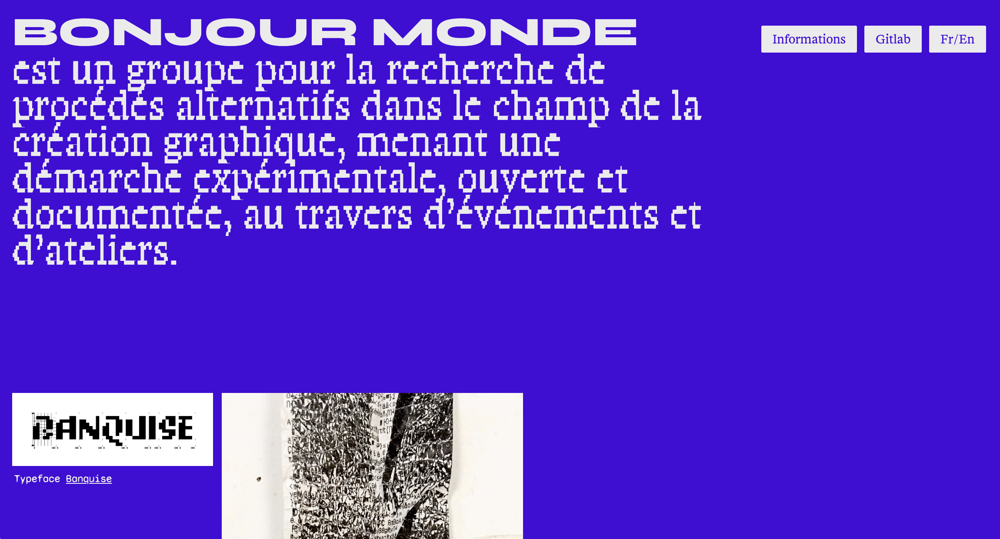
*fig.11*
Armand, lui il a clairement quitté le collectif parce qu'il a déménagé en Angleterre.
Après on s'est beaucoup reconfiguré. En fait, je pense qu'on a une pratique où on essaye d'arriver à gagner le minimum pour pouvoir vivre et payer le loyer et tout le reste et puis après on passe beaucoup de temps à faire des projets perso.
Par exemple avec Raoul, pendant un moment, on avait un petit site qui s'appelait Conjonction, on essayait de publier des textes sur l’ésotérisme en design graphique. Avec Lucas Descroix, on a commencé à faire de la typo parce qu’il a une fonderie qui s'appelle Plain Form. Il y a deux ans il m'avait dit « j'aimerais bien qu'on fasse des typos ensemble », donc on a commencé à en faire ensemble. Et puis il y a un an et demi, je lui ai dit, « j'aimerais bien qu'on fasse une revue sur la typo ensemble » et donc on s'est dit vas-y, on va faire Plain Text.
Je fais pas mal de développement, de boulot de design ici et là, de webtoprint aussi pour des clients. Ces derniers temps j’ai passé beaucoup de temps sur la revue Plain Text et d'essayer de développer la fonderie Plain Form. On n’a rien sorti depuis le Michaux il y a plus d'un an.
Avant qu'on fasse la revue, ce qui a pas mal modelé le parcours que j'ai aujourd'hui c'est que quand j'étais à Valence, donc j'ai fait un diplôme sur qu'est-ce que c'est qu'avoir une idée en typographie.
Il y a quatre ans j’ai eu envie de réactiver ces recherches en typographie, mais qui étaient des recherches plutôt théoriques que vraiment liées aux outils en général, c'était plutôt comment faire de la fiction en typographie et développer les imaginaires autour du texte.
J'avais lancé un compte Twitter anonyme qui s'appelait Grifi pour aller à contresens du milieu de la typographie où tout le monde est très poli, où tout est normé, sur ce compte je pouvais dire ce que je veux sans trop me prendre la tête. Puis au fur et à mesure je me suis rendu compte qu'il y avait une audience aussi pour avoir des discours alternatifs sur la typo.
Et ça a fini par devenir de moins en moins anonyme, à la fois je publiais des caractères expérimentaux, mais aussi des textes. Notamment, c'est les premières fois où j'ai vraiment essayé de formaliser c'était quoi ma vision de la typographie et je pense que ce qui me décrit aujourd'hui pas mal, c'est d'essayer d'avoir une approche assez théorique, mais théorique fictionnelle de la typo.
Et mon utilisation des outils alternatifs, elle est souvent au service de cette perspective-là, plutôt que d'une approche comme OSP ou Antoine qui sont plutôt une entrée par l'outil en lui-même, alors que moi c'est plutôt l'outil pour créer des imaginaires alternatifs au service d’un truc théorique.
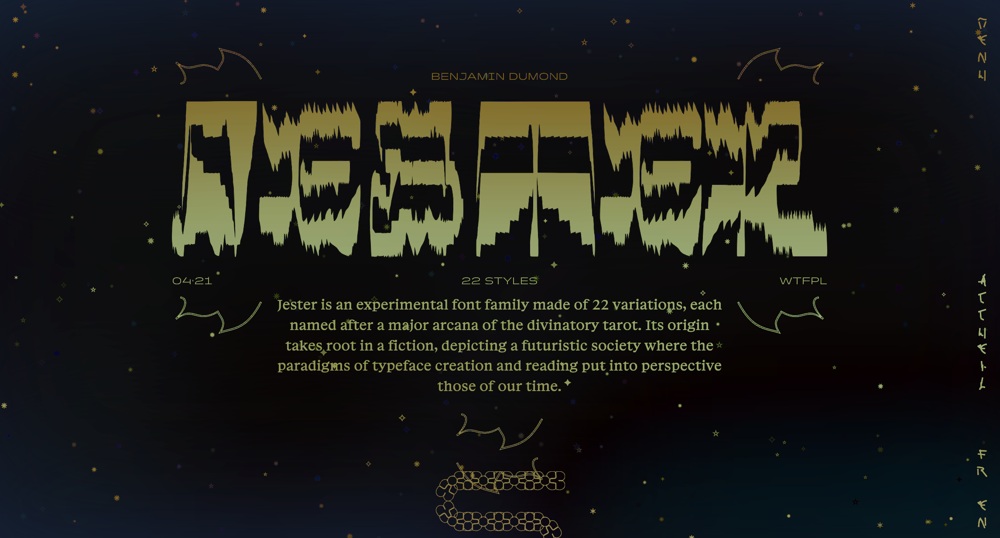
*fig.12*
Mais toi à la base dans tes études que ce soit à Valence ou avant t'as eu un enseignement de typo assez classique ?
Non, vraiment tout l'enseignement que j'ai reçu en typo, il peut se résumer à un cours qui était celui que j'avais à Dupéré avant Valence.
On a eu un prof qui s'appelle Hervé Aracil, qu'on interview dans le deuxième numéro de Plain Text d’ailleurs, il était prof d’édition, pas de typo, mais il adorait la typo, pas de dessin, jamais, mais vraiment la culture de la typographie. C'est un gars qui a jamais rien publié, qui est vieux maintenant mais à la fois qui est très connu dans le milieu, notamment à Lure.
Il avait une approche philosophique de la typographie, c'était un gros lecteur de Deleuze et donc fan du post-modernisme, il avait une manière de théoriser et problématiser la typographie que j'ai jamais vu nulle part ailleurs.
Donc c'est ça vraiment qui m'a formé et qui a fondé ma vision de la typographie. À Valence, j'avais des cours avec David Poulard mais j'ai jamais dessiné de caractère à proprement parler c'est pas mon kiff spécialement. Je trouve ça très laborieux. Je suis plutôt à l'aise avec le fait d'utiliser des scripts pour modifier les typographies déjà existantes. Ça doit aussi être lié à la culture dont je viens du logiciel libre, on fait des forks.
Ce n'est pas encore arrivé de sortir un caractère où c'est vraiment que de la forme, que ce soit le Michaux, le Ready, le Jester, les typos que j'ai pu faire, c'est toujours accompagné de textes qui sont des ouvertures sur des questionnements typographiques. Le Ready, c'est un questionnement autour de qu'est-ce que c'est les écritures illisibles et pourquoi est-ce qu'on les aime. Le Jester, c'est vraiment une fiction où j'imagine un monde de la typographie et le caractère c'est un support de cette fiction là. Et le Michaux, c'est un questionnement aussi sur comment est-ce qu'on construit des familles typographiques.
Tu pars surtout de textes que t'écris et la typo vient illustrer tes propos ?
Oui, un peu comme pouvait faire Emigre, la typo devient un support de la critique que tu fais à la typographie. Ça n’est pas juste un exemple, en elle-même elle est objet typographique et critique.
Il y a un certain plaisir à se dire comment est-ce qu’on fait des caractères qui fonctionnent différemment. Pour le Ready, on réfléchit à comment faire des graisses de manière différente ?
Et en même temps, plus ça graisse, plus ça devient illisible.
Tu disais que tu partais à la base du monde des logiciels libres et des logiciels alternatifs mais comment t'es rentrée dans ce monde-là enfin de quelle manière ? Est-ce que c'était très vite dans tes études ou c'est arrivé après ?
Non c'était bien avant quand j'étais ado, j'ai eu un ordinateur assez vite. Et je pense que la figure que j'aimais bien dans les œuvres de fiction en général quand j'avais 15/16 ans, c'était vraiment le hacker. C’est un mélange de Matrix, de certains mangas aussi où il y avait des figures de hackers.J’ai installé Linux sur mon ordi et j’allais sur des forums de hacking.
Après je suis arrivé en études de design et tout le monde avait des Macs. Du coup j'ai mis de côté Linux et les mangas, j’ai eu un Mac et je lisais de la BD française. Puis en deuxième année à Valence, j’ai fait un stage à Paris et Antoine m’a hébergé. Un jour il me dit « ouais j'ai commencé à utiliser un truc qui s'appelle Linux, je te montre », je lui dit que j’utilisais ça quand j’étais gosse et là je me dit c'est trop con d’avoir tout arrêté. Je réinstalle grâce à Antoine et je décide de faire mon diplôme de cinquième année entièrement sur Linux.
Comme ça je vois si ça passe ou pas après dans le monde pro. C'est passé, c'était laborieux sur des trucs mais ça allait. Et depuis je suis incapable de quitter Linux.
Je suis très Scribus aussi parce que j'aime bien la mise en page avec une interface.
Est-ce que tu pourrais me parler un peu plus du projet Skelefont avec Raphaël Bastide, comment c'est né ?
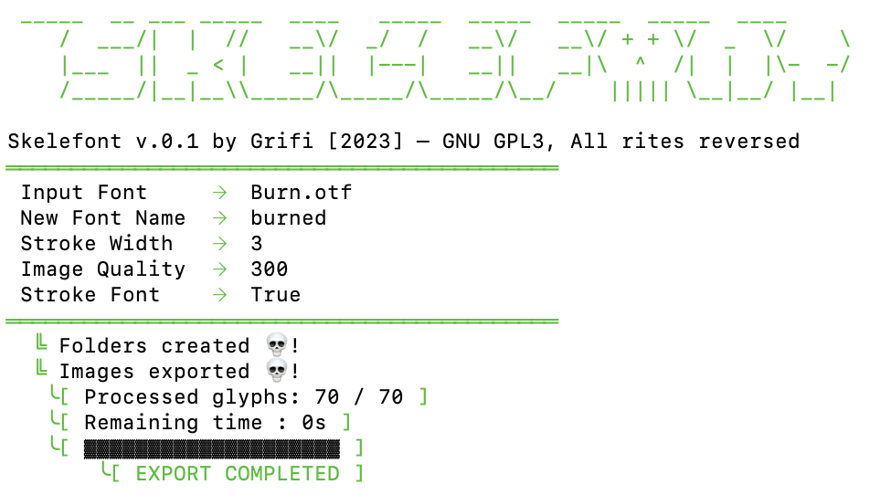
*fig.13*
Ça a commencé pendant Bonjour Monde, Armand avait fait un petit logiciel qu'il avait appelé Magnet Mike où tu pouvais dessiner avec ton trackpad et en dessous il y avait une grille invisible qui contraignait le dessin pour qu’il soit pixelisé. Comme c’était du vectoriel, tu pouvais faire varier la grille et ça devenait de plus en plus grossier en terme de dessin.
Avec Lucas on voit ça et on se dit faut qu’on s’en serve absolument pour faire de la typo comme c'est du vectoriel. On en parle à Armand comme c'est lui qui développait le plus à l’époque et il fait un prototype. Puis deux ans après quand je décide de faire de la typo tout seul, je me dis vas-y, je vais essayer de reprendre ce truc et de refaire des scripts qui modifient des OTF à la volée.
C'est comme ça que j'ai commencé à bosser sur le Jester. Et donc je commence à avoir un workflow rodé sur ça, où je vois comment ça peut fonctionner.
Au fil des années on a eu l’occasion de se croiser avec Raphael, on évoluait dans des cercles relativement proches et Prepostprint a aidé aussi.
Il y a plus d'un an et quelques il m'envoie un message pour me dire qu’il a besoin que je développe un truc semblable pour Velvetyne. Sachant que j'avais quasiment toute l'infrastructure qui était prête en terme de scripte. Le seul truc qui me manquait, c'était l'autoline center et puis vérifier que tout fonctionne bien. On a fait quelques allers-retours, on s'est fait un Git et puis c’était fait. Ça restait un terrain connu, comme on bosse beaucoup avec un agrégat de plein de petits scripts qu'on a déjà fait et bien on connaissait ce truc de squelette mine de rien. On l'avait déjà croisé parce qu’Antoine l'avait fait pour son diplôme à Valence. où ça restait pas trop à l'état de squelette tel quel, parce que lui il rappliquait des plumes par-dessus.
Il avait fait un caractère qui s'appelait l’Utopia, c'était le même principe dans le fond sauf qu’il rappliquait ides plumes par-dessus.
T'as parlé de l’IA, notamment à l’étape de l’écriture des scripts qui est relou, du coupe me demande quelle place ça prend dans ton travail ?
Jusque-là pas une très grande place, les scripts que j’utilise restent assez simples, en soit je demande juste à FontForge d'exporter toutes les images en PNG. Je fais des petites opérations dessus, on vectorise automatiquement avec Potrace et on réinsère dedans.
Les premières fois où on a utilisé des IA, j'en parle souvent parce qu'on a surtout en tête ChatGPT mais en fait y’a de l’IA ailleurs depuis longtemps. C'est Deepl, le logiciel de traduction en ligne qu’on utilise beaucoup pour la revue notamment parce qu’on a pas la thune pour payer des traducteurs.
Maintenant j'utilise des IA pour coder aussi mais très rarement, je me sens un peu dépassé et 90% du temps je développe à la main parce que je bosse à petites échelles.
Majoritairement, les projets sur lesquels tu bosses c'est du developpement web ?
Je dirais que je fais moitié des cours et moitié du dev, et puis un tout petit peu de design et de typo ici et là.
La revue, tout ce qu'on gagne, on le réinjecte dans le fait de pouvoir imprimer autre chose. Là, on n'a pas encore trop communiqué dessus, mais avec Plain Form, on a sorti un un petit livre de fiction sur la typographie. Ça nous permet d'avoir de l'argent pour ces petits projets-là.
Tu interviens régulièrement dans des écoles supérieures ?
J'interviens à Lisaa, une école privée à Paris, là on fait des workshops de typo où on est assez libre. On fait des expérimentations avec des gens qui savent pas faire de la typo.
Je donne aussi des cours de Web to Print à la fac de Nîmes avec Lucille Haute. On fait des éditions à plusieurs avec les étudiants, on utilise PagedJS, c’est vraiment de la formation sur des workflows alternatifs.
J'ai aussi quelques heures, mais vraiment pas beaucoup, à la fac de Lyon sur les logiciels libre. Je donne des cours de Scribus avec des gens qui font pas du tout des études de design. J'aime bien faire des cours avec des gens qui sont zéro en design, c'est toujours l'occasion de faire du prosélytisme Scribus c'est sympa.
Pour revenir sur la typo, pour Plain Form c'était quoi les discussions autour du choix des licences ? Comment vous vous êtes mis d'accord sur on va vendre cette typo ou pas ?
Plain Form à la base c'est vraiment le projet de Lucas. Donc j'avoue tout ce qui est administratif, c'est lui qui gère. Après la question des licences, quand je postais des trucs sur Grifi tout était en domaine public, parce que je voulais la licence la plus permissive possible.
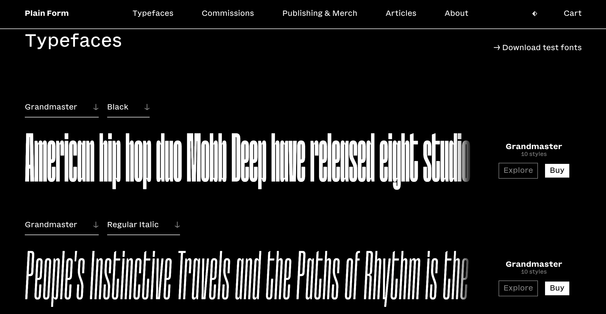
*fig.14*
La licence que Lucas a choisi sur Plain Form, c'est une licence qui dépend uniquement de la taille que tu as en tant qu'utilisateur de la typographie. Si t'es Nike, tu payes cher, si t'es tout seul, tu payes le minimum et ça dépend pas de la taille de ton projet en soit.
T'as parlé rapidement des outils collaboratifs et je me demandais quels étaient les outils que tu utilisais quand tu bossais à plusieurs que ce soit pour de la co-création/publication/édition ?
Je continue à utiliser GitCloud de temps en temps, on l'a surtout utilisé du temps de Bonjour Monde, presque plus comme une archive, on n'a jamais été des heavy Git user comme OSP peut l’être.
On a toujours plus été dans l'optique de s’attribuer des rôles différents. Armand, il codait, moi j'étais dans les logiciels libres, Inkscape, FontForge etc. Lucas, il faisait de la typo sur Glyphs pour le coup et Raoul il jonglait avec tout.
J'ai toujours préféré cette façon de travailler où on se marche pas trop sur les pieds. Et à la fin, ça fait une sorte de projet global parce que chacun s'est occupé de ses parties quoi et les partage sur un dossier partagé.
Ça nous ait aussi beaucoup arriver de fabriquer nos propres outils.
Le dernier gros projet qu’on a eu ces dernières années, c'est le Bookolab, une sorte de surcouche sur PagedJS en gros. C'est un CMS qu'on rajoute, c'est avec ça qu'on bosse quand on fait les cours à Nîmes. Ça permet de faire un livre comme tu fais un site Web tout ça dans une interface.
L'enseignement du code, je trouve que c'est un truc compliqué quand t'es pas un étudiant qui se dit de manière proactive je vais faire du code. Ça prend du temps, j'ai l'impression d’avoir passer des plombes à faire du code tout seul dans ma chambre et je comprends que ça soit pas le kiff de tout le monde.
Des fois je me dis c'est plus intéressant d'expliquer des trucs de mise en page, c'est quoi des belles marges ou la hiérarchie de l'information plutôt que de faire du Web pur en responsive.
C'est sûr que c'est une entrée alternative de passer par la mise en page ou même je pense à Metapost parce que ça fonctionne pareil en soit t’as une interface qui te sort du code brut. On a eu un workshop avec Julie Blanc sur PagedJS et il y avait ce côté qui rendait le code accessible.
Et tu agis à quel niveau dans Plain Text ?
À la base, tout devait être fait en PagedJS, on était donc tous les deux dans le comité éditorial.
On créait la revue de zéro, le contenu, contacter tous les auteurs, la relecture, la traduction, la mise en page etc. Maintenant qu’on est un peu plus rodé et qu’un numéro c'est beaucoup moins chronophage qu’avant, je veux m'occuper que de la gestion éditoriale et du contenu de la forme théorique. J’écris beaucoup aussi, c'est une bonne excuse pour avoir une tribune et raconter des choses. Je fais pas mal de suivi de texte et de réécriture et ça me plaît, c'est notamment pour des gens qui sont pas forcément habitués à écrire.
Est-ce que t'aurais des conseils en webtoprint à me donner, quels outils vous utilisez avec tes étudiant·es ?
Pour Grifi, par exemple, je m'étais dit comment est-ce que je fais pour faire un truc imprimable donc il y a du Webtoprint. J'avais fait du CSS Sprint pour qu’il y ait l'aspect site Web et que quand t'imprimes ça te fasse un truc joli. Je pense que des fois au plus simple le mieux et j’ai l’impression que dans ton cas de site web qui regroupe tes recherches et entretiens ça peut largement suffire. Entre les media query et les display none. Paged.js c'est un outil incroyable mais en remplacement de Indesign, tu fais pas un site avec.
Merci beaucoup pour ton temps Benjamin c’était hyper intéressant !
Ressources avec
Amélie Dumont
sur un pad en mai 2026
Comment tu te définis aujourd'hui dans ton travail et est-ce que ça a evolué/s'est précisé au fil des années ?
Lorsque je débutais, après la fin de mes études, je me définissais comme designer graphique et développeuse n'utilisant que des outils libres et open source, car c'étaient les deux domaines dans lesquels je travaillais le plus et que comme mon rapport aux outils numériques est central dans mon travail, je précise quels outils j'utilise. J'ai un Master en Typographie et Design graphique, il me semblait logique de me définir comme exerçant ces métiers. Plus le temps a passé, plus ma pratique s'est élargie et a mélangé inextricablement plusieurs domaines au sein de mes projets : typographie, code, design graphique, ou encore du textile plus récemment. C'est pourquoi il me semble maintenant que me définir comme designer graphique/développeuse/typographe ne reflète pas exactement ma pratique. J'ai plutôt tendance à dire à présent que je « fais » du design graphique, de la typo, du code, du textile, etc. Comme ça je ne suis pas limitée à un rôle et c'est plus représentatif de la polyvalence présente dans mon travail. Et toujours avec des outils libres, ça n'a pas changé.
Peux-tu me parler de ton parcours dans le monde du libre, de l’open source et des alternatives aux logiciels propriétaires ?
- d’où tu pars à la base ?
- est-ce que tu as eu un enseignement classique de la typographie et du graphisme et tu t’en es éloignée ?
- est-ce que tu as dû apprendre à désapprendre ?
J'ai commencé à utiliser des outils libres en Master, parce que je me sentais limitée par les outils avec lesquels l'enseignement était donné. J'ai en effet reçu ce qu'on peut qualifier d'enseignement classique en typographie et graphisme (du moins concernant les outils avec lesquels on nous apprenait à travailler, la suite Adobe principalement), et j'avais l'impression que les possibilités étaient restreintes et que toutes mes productions avaient tendance à se ressembler. Puis je ne trouvais pas pertinent d'utiliser automatiquement les mêmes logiciels pour tous les projets, sans jamais se poser de questions sur la démarche de travail ou les modalités de diffusion du projet.
Sur le plan technique, je n'ai pas eu le sentiment d'avoir à me défaire de ce que je connaissais déjà. Les outils libres sont pensés et fonctionnent différemment, et faire du code c'est encore autre chose. C'est plutôt que j'ai dû m'ouvrir et me former à d'autres paradigmes techniques : passer sous Linux et apprendre à utiliser la ligne de commande par exemple. Je dirais plutôt que j'ai laissé de côté les outils avec lesquels j'ai été formée pour me tourner vers d'autres solutions qui me correspondent plus, que ce soit sur un plan éthique ou dans la méthode de travail. Par contre, sur le plan conceptuel et ma façon de gérer les projets, il y a eu une évolution importante depuis la fin de mes études. Pour moi un projet se fait vraiment en discussion avec un.e commanditaire et il faut que les personnes avec qui je travaille soient en accord avec mon rapport aux outils numériques et aux enjeux politiques/éthiques qui y sont liés. Je conçois les projets dans une démarche de recherche, c'est un point sur lequel je ne transige pas. Donc j'ai arrêté d'accepter n'importe quel projet ou de postuler à n'iporte quel appel d'offre à partir du moment où je n'ai pas la possibilité de travailler comme je le souhaite.
Comment s'est passé l'après école pour toi ? Est-ce que tu aurais des conseils à donner aux futur·es diplomé·es ?
Quand je débutais et que je découvrais encore mes outils, je ne collaborais pas qu'avec des personnes connaissant le mouvement du libre ou y étant sensibilisées, ce qui a donné lieu à des moments parfois compliqués parce que nous n'avions pas la même vision des projets/des outils et je devais faire preuve de beaucoup de pédagogie, pour expliquer que je ne pouvais pas utiliser des fichiers en formats propriétaires par exemple, ou que du fait que j'utilisais des outils alternatifs à la suite Adobe, il était normal que le résultat soit différent visuellement. Parfois la pédagogie portait ses fruits, mais j'ai souvent fini par me fatiguer pour rien car mes interloculeur.ice.s ne voulaient pas changer de point de vue. Ce qui fait que maintenant j'accepte des collaborations seulement si ma démarche en regard des outils que j'utilise est comprise et respectée, voire fait pleinement partie du projet.
De mon point de vue, si on a vraiment envie de poursuivre une recherche à la sortie des études, j'encourage à persévérer dans cette voie. J'ai bien conscience que quand on est jeune diplômé.e il y a des réalités économiques qui ne permettent pas toujours d'avoir le temps de s'adonner à des projets de recherche. Mais si on arrive à trouver du temps pour ça, à échanger avec des personnes qui ont des préoccupations similaires, c'est vraiment formateur.
Est-ce que tu as toujours voulu rendre accessibles et libres les fontes que tu dessines ?
Quelles sont les réflexions que tu as à chaque fois que tu dois faire un choix de licence typographique ?
La dimension collective et le partage font pleinement partie de la culture du libre, afin de respecter des principes éthiques et une vision politique, en plus de permettre d'améliorer les outils par le concours de différentes personnes. Il me semble donc parfaitement normal et justifié d'également partager ce que je crée pour mes projets, en rendant accessible le code source de mon travail ou en le diffusant sous licence libre. Je modifie et ré-utilise constamment des logiciels ou des bouts de code écrits par d'autres personnes, et ce grâce au fait qu'iels ont partagé leur travail. Donc je redistribue aussi ce que je crée avec des ressources mises à disposition par des communautés, c'est pourquoi je mets mes typographies sous licence libre.
Ce qui m'importe dans le choix de licence typographique, c'est, en plus de ce que je viens d'expliquer sur la redistribution de ressources créées avec des outils libres qui m'est chère, de permettre un accès gratuit : je veux permettre à toute personne, même si iel n'a pas les moyens de payer une licence, de pouvoir les utiliser. Ensuite, je veux que les forks ou autres modifications à partir de mes typos soient également distribués sous licence libre : je refuse de voir mon travail privatisé ou commercialisé par d'autres, ce serait contraire aux principes du libre et à mes convictions.
Est-ce que le code a toujours été au sein de ta pratique de graphiste/typographe ?
De quelles manières le code change ta manière de penser la mise en page ou la typo ?
Est-ce que tu ressens des freins actuels à l’adoption du libre dans le design graphique ?
J'ai appris le code majoritairement seule, après la fin de mes études. À l'époque où j'étudiais en école d'art, il n'y avait quasiment pas de cours concernant le code, à peine quelques initiations au web, donc si on voulait apprendre à coder, il fallait faire des recherches de son côté. Dès ma sortie de l'école, j'ai appris beaucoup de choses en autonomie. Je pense que c'est beaucoup grâce au code (d'abord les outils du web, puis d'autres langages de programmation) que j'ai développé dans les années qui ont suivi ma sortie de l'école une pratique personnelle.
J'apprécie d'utiliser des langages de programmation pour leur malléabilité : ils permettent de développer ses propres outils, ou de modifier du code existant pour se l'approprier. Dans mes projets, je prends les outils comme point de départ : à partir des contraintes qu'ils imposent et des possibilités qu'ils offrent, je vais faire des choix. J'applique ce principe au code : quand je découvre un langage de programmation/une librairie, je passe du temps à explorer ce qu'il est possible de faire avec, et je vais essayer d'exploiter ces possibiltés et de les rendre visibles quand je m'en servirai dans un projet. Par exemple quand j'ai dessiné des typos avec Metapost, j'étais totalement dans cette démarche : utiliser pleinement ce que produit cet outil graphiquement/son fonctionnement pour concevoir la forme de mes caractères.
On peut adopter le libre dans le design graphique par motivation et conviction personnelle, mais c'est difficile de se lancer sans l'aide de personne. Il peut y avoir de sérieuses limitations techniques, surtout quand on débute, et se convertir seul.e à ces outils peut se révéler très complexe. C'est pourquoi je pense que les dynamiques de groupe, les communautés et les collectifs qui permettent de rencontrer ou d'échanger avec d'autres personnes qui utilisent le libre sont hyper importantes pour apprendre à plusieurs et se sentir moins seul.e. Je ne sais pas exactement où les choses en sont dans les écoles d'art, mais pour typiquement le lieu où il serait possible et approprié de se former au libre en communauté. Les étudiant.e.s peuvent s'auto-organiser, mais avoir des équipes pédagogiques ouvertes à ces questions et les intégrant dans les cours faciliterait grandement les choses.
Quels types de projets tu privilégies et pour quelles raisons ? Qu'est-ce qui te plaît le plus dans ton métier
? Qu'est-ce que tu aimerais voir changer ?
Je privilégie les projets et les collaborations dans lesquels les outils utilisés vont être au coeur de la démarche, pour les raisons que j'ai évoquées plus haut. Je regarde également avec attention les sujets abordés dans le projet et ses enjeux ; j'ai besoin que ça ait du sens pour moi. J'aime faire ce métier et j'aime travailler comme je le fais car c'est très varié. Chaque projet est unique et même si j'utilise des outils que j'ai déjà utilisés, ce n'est jamais pareil et chaque expérience me permet d'essayer des choses et de nourrir les futurs projets. J'ai trouvé une façon de faire du graphisme avec lequelle je suis parfaitement en accord actuellement, donc je ne sais pas si j'ai envie de voir des choses changer, de mon côté en tout cas. Peut-être souhaiter que de plus en plus de commanditaires, notamment les institutions culturelles, se posent des questions sur leurs outils numériques au sens large, ce qui donnerait lieu à des échanges plus pertinents entre ces structures et les designers.
Ses mots à retrouver sur son tout nouveau site :
« Je pense que le choix des outils employés par un·e designer/développeur·se n'est pas neutre ; cela fait pleinement partie de la démarche et influence le processus créatif. Inscrire ma pratique dans le mouvement du libre me permet de créer ou de modifier les outils selon les besoins de chaque projet, mais aussi de chercher d'autres vocabulaires graphiques et paradigmes techniques que ceux produits par des logiciels propriétaires. Mon travail donne une place prépondérante à l'expérimentation avec les outils numériques car je veux explorer les possibilités qu'ils offrent et rendre leurs particularités perceptibles dans mes projets. »
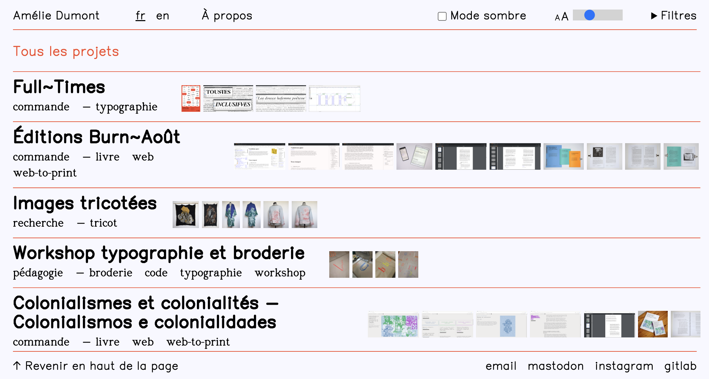
*fig.15*
Ressources personnelles
avril 2026
Pendant mes trois premières années d’études supérieurs en design graphique,
l’éventualité qu’il y ait des alternatives à la suite Adobe m’était complètement inconnues
et même pas remise en question. Sans vouloir faire de généralités, je ne pense pas être la
seule.
« Quand j’ai commencé à me former au graphisme, on m’a plus ou moins subtilement
convaincue que la suite Adobe, était la seule manière de faire du design, sas offrir
quelconque solution/soutien financier pour l’obtenir, sans non plus proposer une
alternative gratuite ou bien (à l’époque je ne connaissais pas ce terme) open source. »
Dès le départ notre regard, notre créativité, nos reflexes sont sculptés par notre relation
exclusive et dépendante à ces logiciels propriétaires, sans que l’on s’en rende compte.
D’un point de vue sociologique, ces outils participent à une homogénéisation des
pratiques qui s’accompagne d’une logique d’exclusion. En effet, leur coût viennent
renforcer les clivages sociaux, et empêche une diversité d’étudiant·es en design
graphique. La correlation entre l’accès financier aux logiciels propriétaires et à la pratique
elle-même est quasiment inévitable.
Certaines esthétiques sont d’ailleurs favorisées et plus acceptées professionnellement
que d’autres, les productions faites en F/LOSS (Free/Libre Open Source Software) étant
rarement considérées au même niveau que les autres.
En parallèle, j’avais une vision du code très cliché qui me paraissait extrêmement
éloignée de ma pratique et de l’art en général, en tout cas je ne me sentais pas du tout
concernée et je n’ai pas le souvenir d’avoir écouté une seule seconde de mes cours de
langage numérique. Ce domaine était réservé aux geeks, aux hackers, aux web
développeurs et aux ingénieurs mais pas au graphiste et encore moins au typographe.
Depuis mon entrée à l’atelier de typographie de la Cambre, cette vision que j’avais du
graphisme que je qualifierai de traditionnelle aujourd’hui a été complètement explosée.
J’y ai découvert d’autres manières de faire graphisme : la recherche constante d’outils
alternatifs, le bricolage numérique, l’expérimentation et l’intégration du code comme
matériau de création. Cette approche a profondément remis en question ma vision du
graphisme, jusque-là relativement normative. Elle m’a permis de comprendre que les
outils ne sont pas neutres : ils induisent des formes, des esthétiques et même des
comportements collectifs.
C’est en partie grâce au travail de documentation et projet de diplôme Buffet à volonté de
Clara Bougon, ancienne master à l’atelier que j’ai mis un pied dans le monde du libre.
Passer des outils privés à ceux du libre, ce n’est pas simplement “changer de logiciel”,
mais modifier son rapport au monde, à la création et aux autres.
L’expression « bricolage » dans le champ numérique et graphique prend alors sens, c'est
ce que Camille Bosqué explore dans Open Design. Fabrication numérique et mouvement
maker (Éditions B42, 2021). Les outils de fabrication influencent ce qu’elle appelle la
“culture maker”, la culture du faire. Selon elle, la réappropriation des technologies
(imprimantes 3D, code, logiciels libres) crée une esthétique et une éthique innovantes,
ouvertes et collaboratives.
La normalisation et banalisation de l’utilisation des logiciels privés notamment dans les
écoles d’art alimente une perception unilatérale et conditionne les pratiques en les figeant
dans un cadre précis de création.
S’écarter des logiciels dominants devient un acte politique. Faire le choix de travailler
avec des logiciels libres et concevoir les bugs comme des éléments esthétiques revient à
désobéir à des normes implicites. C’est dans cette désobéissance que naît un espace de
liberté où les bases peuvent être redéfinies, voire entièrement réinventées. La finalité de
l’objet graphique devient, selon moi, moins intéressante que le processus créatif en lui-
même. Cette pratique permet aussi de renverser la hiérarchie classique où la pratique du
code est méconnue dans le champs du design graphique.v
Dans l’imaginaire collectif, le code semble complètement inaccessible alors qu’en réalité
il n’est pas plus complexe que l’apprentissage de la suite Adobe ou autre logiciels de ce
type, mais comme il ne fait pas partie des options de départ il paraît forcément lointain et
obscur.
Comprendre le fonctionnement des outils avec lesquels on travaille, et je parle même de
la matière première qu’est l’ordinateur pour une graphiste et décider d’étudier leur
composition interne permet de ne plus en être dépendant·e.
Le code devient alors un moyen de reprendre le contrôle sur le processus de création et
de produire des formes autres et intéressantes. Selon moi, l’art se trouve en grande partie
dans cette façon de faire graphisme, ce mécanisme anticonformiste et propre à chacun·e
rend l’action unique et spéciale.
La culture des forums, des gits, des pads, de tous ces moyens relevant du libre qui
facilitent le partage de ressources, l’entre-aide, la collectivisation créent des espaces
numériques de luttes et de stimulation hyper riches. C’est ce que Eric Schrijver démontre
dans Copiez ce livre (Les Presses du réel, 2023), en encourageant le changement de
paradigme autour du droit d’auteur et de la création partagée. Il montre que la copie ne
doit pas être vue comme un vol mais comme une circulation, un partage et une création.
Ainsi, l'affranchissement des outils graphiques standards et la réappropriation du langage
numérique ne relèvent pas uniquement d’une démarche technique mais permet la remise
en question du designer face à ses outils, sa vision du collectif mais aussi face aux
normes qui contrôlent inconsciemment sa pratique.
En intégrant et concevant la possibilité de faire autrement, on rend possible une
autonomie créative qui n’est pas seulement esthétique, mais aussi critique et politique.
Cette réflexion ne consiste pas à rejeter totalement les outils existants, mais à les
questionner, à prendre conscience de leur place et leur impact sur notre travail, à tenter
de les détourner, à revaloriser des pratiques souvent jugées et mises de côté. Encourager
la mise en commun, le partage d’astuces et conseils liées aux F/LOSS. Redonner une
place centrale aux pratiques et intelligences collectives et communautaires.
Cela renvoie directement à la pensée d’Aaron Swartz dans son manifeste Guerilla Open
Access Manifesto (2008) où il appelle à résister à la privatisation du savoir et d’une
certaine façon à libérer la connaissance numérique.
Ma récente lecture du Manifeste Hacker de Mckenzie Wark est venue poser des mots et éclairer ma réflexion. Selon elle, deux classes s’opposent : la classe vectorialiste (celleux qui détiennent les vecteurs d’information et ne la partagent pas) et la classe hacker (celleux qui créent de nouvelles informations et désirent une production libre).
Le choix de n’employer que des outils libres et d’utiliser le code comme moyen de production graphique permet de lutter contre cette classe vectorialiste en créant des chemins de traverse qui sortent des normes dominantes et discriminantes de manière politique et militante.
Ressources avec
Antoine Gelgon
sur un pad en juin 2026
Comment tu te définis aujourd'hui dans ton travail et est-ce que ça a evolué/s'est précisé au fil des années ?
Peux-tu me parler de ton parcours dans le monde du libre, de l’open source et des alternatives aux logiciels propriétaires ?
- d’où tu pars à la base ?
- est-ce que tu as eu un enseignement classique de la typographie et du graphisme et tu t’en es éloignée ?
- est-ce que tu as dû apprendre à désapprendre ?
Je suis français et j'ai fait toute ma scolarité en France. La pratique de la typographie a commencé lorsque j'avais 15/16 ans. À cette époque, je suis rentré dans une formation professionnalisante dans un lycée qui s'appelle Claude Garamont. Là-bas, j'ai appris les métiers de l'imprimerie et de la mise en page. Une formation d'un métier qui n'existe plus et qui était déjà à l'époque en voie de disparition : « dessinateur d'exécution en communication graphique ». J'ai appris la typographie les deux premières années sans toucher à aucun ordinateur. Le dessin de caractère était à l'encre et au tire-ligne, et la mise en page faite de ciseaux et de papier, on plaçait les blocs de texte et les images sur la grille à la main. Tout ça avec également des cours sur l'histoire de l'imprimerie et de la typographie.
Par la suite, j'ai continué à me former en design graphique en école supérieure où, bien évidemment, l’hégémonie d'Adobe était déjà bien présente. La question des moyens techniques était rarement, pour ne pas dire jamais, évoquée. Le métier utilise Adobe, nous apprenions donc Adobe.
Je suis venu à m'intéresser aux logiciels libres par une prise de conscience du poids et de l'importance des objets techniques sur les productions humaines. Cela peut paraître étrange, mais c'est en me penchant sur la notion d'identité personnelle que je suis arrivé à m’intéresser au statut de nos outils et autres objets techniques. Vers 2011/2012, j'ai commencé à chercher des écrits de penseurs qui ont tenté de définir ce que nous sommes en tant qu'individu. Jusqu'au jour où je suis tombé sur la notion d'individuation du philosophe Gilbert Simondon. Une pensée qui, à l'époque, m'a beaucoup bouleversé, car elle ne tentait pas d'expliquer la nature même du « je » ou du « nous » intérieurs, mais définissait un « je » et un « nous » comme un système, une triangulation avec la technique. L'individuation selon Simondon est le fait que nous nous transformons en tant qu'individus (le « je ») mais aussi en tant que groupe d'individus (le « nous ») grâce à ce qui est entre le « je » et le « nous », c'est-à-dire la technique. La technique est ici, selon lui, indispensable pour une émancipation collective comme individuelle, car c'est par elle que nous transmettons des savoirs et pouvons agir sur nos existences.
Le logiciel libre est donc d'un coup apparu comme l'un des moyens pour prendre soin de nos techniques et objets techniques, et par ricochet prendre soin du « nous ».
À partir de cette prise de conscience, j'ai donc investi mon énergie d'étudiant en design à voir comment je pouvais pratiquer avec cette volonté-là : « essayer de pratiquer et produire des objets et savoirs ouverts ». Il y a eu à ce moment-là la découverte de l'existence du collectif OSP (Open Source Publishing) qui, au-delà de me faire voir des personnes bien plus avancées sur ces questions-là, a donné de l'espoir sur une potentielle faisabilité de rendre ceci réel dans une pratique.
Comment s'est passé ta sortie d'études, est-ce que tu savais précisément ce que tu voulais faire ?
L'après-études a commencé à être un réel sujet pour moi ainsi que pour d'autres autour de moi au début du master. À cette époque, j'avais une conviction forte : ça allait être compliqué de faire du design graphique avec les choix politiques avec lesquels je commençais à composer ma pratique. L'idée était de me dire qu'il fallait que je trouve des camarades de galère. La précarité, les coups durs, l'inconnu seraient plus faciles et plus joyeux à affronter en collectif. Mais aussi qu'une émancipation se fait en groupe.
Directement après mes études, en 2015, j'ai pris le train direction Bruxelles. J'ai commencé à travailler avec OSP sur le premier numéro de la revue Médor. Puis j'ai cofondé, au même moment, avec une dizaine d'ami·e·s, l'Atelier Bek, un lieu qui avait pour ambition de croiser plein de pratiques : design, construction, art, etc.
Comment tu es devenu enseignant ? Est-ce que tu avais déjà cette volonté à ta sortie d'étude ou c'est venu après ?
Je suis devenu enseignant en 2016, quelques mois après mon diplôme de master. Je suis devenu conférencier à l'ERG en typographie. Il y avait à ce moment-là de plus en plus d'étudiant·e·s qui cherchaient à faire du dessin de caractères. On m'a appelé pour encadrer quelques cours.
Je n'avais pas la volonté de devenir enseignant. Cependant, j'ai toujours voulu expérimenter et me poser des questions en groupe. L'enseignement, tout comme les workshops, permet justement cet espace qui est pour moi crucial. Un espace contraire à la notion de « formation », un espace où l'on doute, essaie et, par là, s'individualise et redéfinit nos pratiques.
Est-ce que tu as toujours voulu rendre accessibles et libres les fontes que tu dessines ?
Oui, je n'ai jamais eu l'envie de m'approprier les formes du commun. Je ne blâme pas les personnes qui font de la typographie privative, car il faut s'y retrouver économiquement. Je ne dis pas non plus que nous ne sommes autrices ou auteurs de rien lorsque nous pensons et créons de la typographie. Cependant, dans des dessins, même les plus particuliers, nous enfermons des bouts d'histoire, de culture, d'activité humaine qui nous ont précédés. Et au-delà du libre, je pense que tout objet mis face à un public ou placé dans nos environnements devrait être inspectable, réparable ou modifiable.
Quelles sont les réflexions que tu as à chaque fois que tu dois faire un choix de licence typographique ?
Je sais que beaucoup sont plus minutieux que moi sur cette question-là. Ce qui est important pour moi, c'est de préserver le fait que personne, après moi, n'enferme une production. J'aime aussi l'idée de ne pas savoir et de ne pas mettre de conditions fortes sur celle-ci. L'objet que je mets à disposition fait partie de la complexité du monde et est à destination de qui veut. Si l’extrême droite veut utiliser ma typographie, qu'elle le fasse, ça fait partie du relief du monde. Je n'imagine pas une ouverture des objets et des savoirs qui exclurait des personnes, même si elles sont nos ennemies politiques.
Est-ce que le code a toujours été au sein de ta pratique de graphiste/typographe ?
Le code est venu avec cette prise de conscience qu'il fallait investir les objets ouvert. Nos outils de production en design graphique et design typographique sont essentiellement numérique, il a du donc fallu commencer à essayer de comprendre ce qu'il se tramait à l’intérieure de tout ça. Et depuis le code est au coeur de ma pratique. Lorsque je fais un livre, un poster, une typo j'ouvre un éditeur de code.
De quelles manières le code change ta manière de penser la mise en page ou la typo ?
Tout d'abord, j'aime me dire que la technique est une matière réflexive. Que ce n'est pas un mal nécessaire. Il n'y a pas d'un côté la pensée puis de l'autre la matière, les deux avancent ensemble, pour ne pas dire que c'est peut-être la même chose.
Lorsque je fais de la mise en page ou du dessin de caractères avec du code, 90 % du temps, je me pose les mêmes questions que les designers qui utilisent Adobe, Glyphs, FontLab, etc. Il y a là des questions techniques qui se posent à toutes et tous, des histoires de méthodologie, de règles du jeu, de variantes et d'invariants, de hiérarchie de l'information, d'unités, etc.
C'est lorsqu'il y a l'application concrète par le code qu'on peut voir que, malgré nous ou non, le code procure d'autres esthétiques, d'autres façons de jouer avec les règles du jeu qu'on a voulu définir.
Est-ce que tu ressens des freins actuels à l’adoption du libre dans le design graphique ?
Beaucoup moins qu'il y a 15 ans. Je suis passé d'une vague de « Oui, c'est pour faire des choses amateurs et moches » à « Wahouuu, t'as du courage », puis aujourd'hui à « Ah oui, toi aussi tu fais du libre :D ». J'ai l'impression que c'est de moins en moins marginal et je m'en réjouis. J'ai aussi l'impression qu'il y a de plus en plus de ponts possibles entre les personnes qui utilisent les logiciels libres et celles qui n'en utilisent pas.
Pourquoi et de quelles manières tu « bricoles » tes propres outils ?
On entend souvent, et je suis le premier à l'utiliser, le champ lexical du bricolage et de l'artisanat pour decrire des pratiques de hacking informatique. Mais j'ai souvent l'impression qu'on l'utilise par facilité ; c'est une comparaison simple et universelle. On utilise le mot « outil » pour parler d'un programme, « forge » pour l'endroit où se versionnent nos programmes ; le matin, je dis que je vais à l'atelier alors qu'il n'y a pas d'établi, mais juste un bureau avec un écran. Je regarde mes doigts, ils n'ont rien d'un bricoleur. Mais la comparaison est noble, voire romantique.
C'est intéressant de trouver d'autres champs lexicaux, car chaque champ va mettre le doigt sur des particularités de la pratique. Certes, le bricolage va probablement mettre l'accent sur l'action, le geste, l'instabilité, la pièce unique sur mesure ou un acte de résistance face à l'industrie. Mais il y a d'autres champs, comme OSP avec la cuisine, qui peuvent évoquer le procédural, le mélange, les ingrédients, les couches, le partage de la recette et du repas.
Mais si je tente de décrire ce que je fais en utilisant le champ lexical de l'informatique, je répondrais à la question comme ceci.
J'aime bien me dire, d'une manière très bête et méchante, qu'un designer graphique est une personne qui transforme plusieurs fichiers numériques en un seul. Notre job, c'est de prendre un .jpg et un .txt et d'en faire un .pdf. C'est dans cette transformation de deux fichiers en un qu'il y a, à mes yeux, une immensité de questions. Mon rôle de designer est de concevoir ces transformations. Et pour cela, je suis obligé d'essayer de comprendre les programmes et les formats que j'utilise, quels points d'accroche peut avoir tel programme avec tel format. Quelles informations peuvent être émises par le programme A, et comment les reformater pour que le programme B puisse les recevoir ?
La question principale, selon moi, est : y a-t-il de nouvelles esthétiques qui peuvent exister dans cette fraction de seconde de conversion ou de génération de fichier ? Cette question de la recherche esthétique est, depuis quelques années, devenue très importante dans ce que j'entreprends ; cela devient même certainement la raison la plus politique pour moi. Pour le dire simplement, j'ai du mal à m'imaginer qu'une envie cruciale de changement de monde puisse se faire sans un changement de nos esthétiques. Le linguiste George Lakoff a analysé l'esthétique des débats d'idées et nous montre qu'elle est constituée du champ lexical de la guerre « les arguments sont indéfendables », « on attaque des positions », « on démolit des raisonnements », « on défend nos idées face à notre adversaire ». Lakoff se demande ce que seraient nos échanges d'idées basés sur le champ lexical de la danse. Il y a peut-être là, dans notre rôle de designer, le besoin de trouver d'autres esthétiques et d'autres vocabulaires dans nos typographies, dans nos livres, dans nos affiches, dans nos pages web, etc. C'est peut-être dérisoire, mais l'expérimentation technique est pour moi un moyen de me réconforter et de me dire que j'avance dans ce sens.